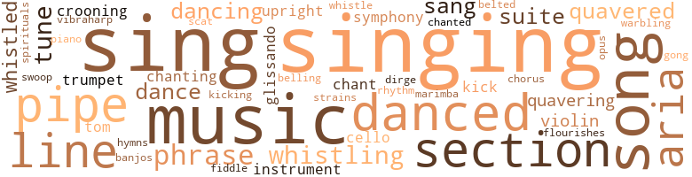
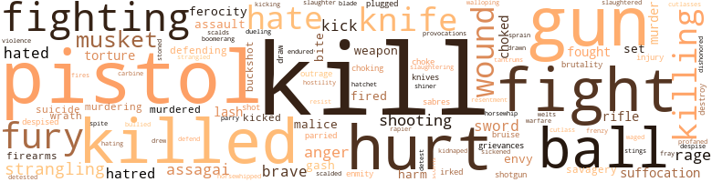
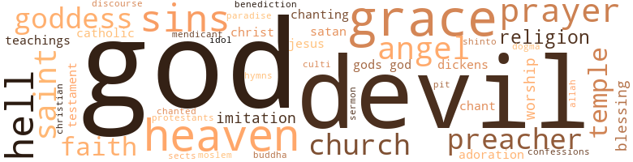

Fairoaks, by Yerby, Frank (1957)
184 music-related terms matched in this text.
Most frequent terms in this topic: singing (18); music (14); sing (14); song (7); danced (7)
aria.n.01
Definition: an elaborate song for solo voice
| word | sentence |
|---|---|
| aria | But Giulietta , as Violetta , was singing her first aria now , in which she declares that frivolity is the best medicine for her illness ; and Jo Ann forgot her fears , forgot everything , in fact , under the spell of that matchless voice . |
| aria | When she reached the last of the aria , where Violetta concludes that this happi - ness can not be for her , that it is only a hopeless dream ; Giulietta looked directly toward their box . |
| aria | In the middle of the second act , when Violetta has already renounced Alfredo at his father 's plea , unable to control herself at the sight of her lover , she sings the passionate : " Amami , Alfredo , amami puant ' io t ' amo - Love me , Alfredo , love me as much as I love you , " Giulietta strode deliberately front and center , ignor - ing the obviously flustered and annoyed tenor , and sang the aria directly to Guy , never once taking her eyes from his face . |
| aria | Then he heard her voice , darkly golden , soaring up from the bedroom , softly , sweetly , with so much warmth , tenderness , invitation , singing : " Deh vieni , non tardar , o gioja bella - " He had never even heard of Mozart 's Le Nozte di Figaro ; he knew only a few words of Italian ; but the invitation in Su - sanna 's aria , as Giluietta sang it , was unmistakable . |
| arias | Guy began to sing ; " per me parisono - " He had heard so many rehearsals of Rigoletto that he knew most of the arias by heart . |
| aria | The Duke 's aria fitted very well here , with its mocking idea , " this woman or that one , they 're all the same to me ! " |
banjo.n.01
Definition: a stringed instrument of the guitar family that has long neck and circular body
| word | sentence |
|---|---|
| banjos | They were equipped with harps made of triangles of wood , strung with the fibers of cane ; banjos of gourds , with a drum-tight skin stretched over the opening , and strung with animal gut ; a marimba or vibraharp with boards of mahogany strung upon cane fiber , making the keys , while gourds , fastened below made sounding chambers . |
belt_out.v.01
Definition: sing loudly and forcefully
| word | sentence |
|---|---|
| belted | He was dressed in scarlet velvet ; he wore a powdered wig below his tricorne ; a smallsword was belted to his slender waist . |
cello.n.01
Definition: a large stringed instrument; seated player holds it upright while playing
| word | sentence |
|---|---|
| cello | No human voice could make music like that : a violin , perhaps , or a cello ; no , not even those ; they had not this roundness , this purity , this utter absence of edge . |
| cello | She was simply running a scale , her voice changing in midflight from cello , to flute , to violin to - nothing could do thatl Noth - ing and nobody . |
chant.n.01
Definition: a repetitive song in which as many syllables as necessary are assigned to a single tone
| word | sentence |
|---|---|
| chant | And Gerald Falks , seeing this , remembering , had the Negroes dig her grave before the cabin door , and laid her to her final rest without priest or chant or prayer or even a headstone to mark the place . |
chorus.n.01
Definition: any utterance produced simultaneously by a group
| word | sentence |
|---|---|
| chorus | In be - iiroaks greys neighed shrilly , in Falks lay there listening to that awful chorus g - l call me a fool , she thought dumbly ; but I 'm e she sat , beside Wilcox Turner , Jo Ann could cing with Trilby . |
cornet.n.01
Definition: a brass musical instrument with a brilliant tone; has a narrow tube and a flared bell and is played by means of valves
| word | sentence |
|---|---|
| trumpet | Then , raising his speaking trumpet toward the lookout , " can you see any more of her ? " |
| trumpet | Even before they reached them , they heard the crash of splintering planking , the high , shrill neighing filled with wild savagery that to Guy , who was his father 's son , was like a trumpet in the bloocf . |
croon.v.01
Definition: sing softly
| word | sentence |
|---|---|
| crooning | Bess led him away , and put him to bed , sitting beside him , cradling his head in her enormous black arms and crooning to him as softly as to a child . |
| crooning | It belongs to Ju Ju , Damballa , Bolozi , Esamba - to all the black and terri - ble gods that gibber in the night - And I - She stiffened suddenly , hearing Beeljie 's voice crooning a soft love song . |
dance.n.01
Definition: an artistic form of nonverbal communication
| word | sentence |
|---|---|
| dance | Then he hung there , clinging to her , while the trees performed a slow and stately dance above his head . |
dance.v.02
Definition: move in a pattern; usually to musical accompaniment; do or perform a dance
| word | sentence |
|---|---|
| dancing | Walton Mallory was dancing with Judy . |
dance.v.03
Definition: skip, leap, or move up and down or sideways
| word | sentence |
|---|---|
| danced | Preston Mallory danced with Fran ^ oise , his wife . |
| dance | " Are n't you going to dance with me at all , Will ? " she de - manded . |
| danced | Wilcox Turner danced like a professional . |
| dancing | He stiffened , fire leaping and dancing in his dark eyes . |
| dance | Mayhap made you dance your last horn - pipe from a yardarm 's end - " " No wonder the colonists have kept it up so long , " Sam mused . |
| danced | He could see them from where he lay , in a great blaze of sun that danced before his fevered eyes between the wind-flickered curtain of the last trees . |
| danced | Anybody would think - " Guy danced the great black over to where Kilrain sat . |
| dancing | His eyes were dancing with cold ferocity . |
| dance | A wind came in from the sea , making the trees dance so that they shredded the light , giving everything motion , inquietude . |
| danced | The bushmen danced about a pile of maimed and bleeding captives . |
| danced | The men fell back , now , and the women danced . |
| dancing | All around them , the Negroes ran , shouting and dancing with joy . |
| danced | He danced with her , holding her close . |
dirge.n.01
Definition: a song or hymn of mourning composed or performed as a memorial to a dead person
| word | sentence |
|---|---|
| dirge | Then the hounds gave tongue , far off and deep , bells plunged in the wind , sounding their ancient dirge of pursuit and death ; and the horsemen , leaning forward now , using whip and spur , raced over the broken ground , still silent , the faster horses pulling away in a symphony of hoof beats , beagle yapping , horn notes and the far off belling of the hounds . |
flourish.n.05
Definition: (music) a short lively tune played on brass instruments
| word | sentence |
|---|---|
| flourishes | It was written in English , though with so many curlicues and flourishes of expert Spencerian penmanship , that Guy had some difficulty in reading it . |
glissando.n.01
Definition: a rapid series of ascending or descending notes on the musical scale
| word | sentence |
|---|---|
| glissando | Guy heard the musical tinkle of Pilar 's laughter , and the glissando rush of her reply ; but he could not make out what she said . |
| glissando | Molto vivace ; allegro vivo - like a glissando - ah , now ! |
gong.n.01
Definition: a percussion instrument consisting of a metal plate that is struck with a softheaded drumstick
| word | sentence |
|---|---|
| gong | Then man and horse were gone , disappearing in a cloud of dust that diminished with incredible rapidity over field and hedge , crosscountry , steeplechasing ; and long after their going , the boom of Wes Falks ' laughter hung in the evening air like the half-remembered reverberations of a great brazen gong . |
hymn.n.01
Definition: a song of praise (to God or to a saint or to a nation)
| word | sentence |
|---|---|
| hymns | Guy , who , apart from some feeble attempts by the vapid daughters of neighboring planters , the hymns of the church , and the Negroes ' Spirituals , had never heard any real music in his life , realized at last how much he had missed . |
kick.v.04
Definition: kick a leg up
| word | sentence |
|---|---|
| kick | Do n't you know that there stallion 'll kick us both into Kingdom come if we gits nigh him ? " |
| kicking | The short , thick carronade bucked and bellowed , kicking backward against the guylines . |
| kick | Mongo kick her in belly one time drunk . |
marimba.n.01
Definition: a percussion instrument with wooden bars tuned to produce a chromatic scale and with resonators; played with small mallets
| word | sentence |
|---|---|
| marimba | They were equipped with harps made of triangles of wood , strung with the fibers of cane ; banjos of gourds , with a drum-tight skin stretched over the opening , and strung with animal gut ; a marimba or vibraharp with boards of mahogany strung upon cane fiber , making the keys , while gourds , fastened below made sounding chambers . |
music.n.01
Definition: an artistic form of auditory communication incorporating instrumental or vocal tones in a structured and continuous manner
| word | sentence |
|---|---|
| music | lie , who had witnessed like occasions at the principal palaces of music in the old world , tried to see it now through her unsophisticated eyes : the landaus , vic - torias , hansoms , traps , surreys , sulkies , even buggies , rolling up to the door to disgorge the gorgeously bejeweled and gowned Creole grande dames , escorted by their gentlemen in strictest formal evening wear . |
| music | He found himself surrendering to the magic of it , knowing at last that there were some things beyond mere sport ; that this was high drama , pageantry , inevitable tragedy , pagan and barbaric : this sacri - fice of the small , furry beast , this clothing of savagery in music and splendor ; this glorious ceremony in honor of man 's old and bloody gods . . . He was , of course , in at the death . |
| music | At a signal from the Mongo , they set up a most unearthly din , which Guy was hard put , at first , to recognize as music . |
| music | The music crashed to a halt . |
| music | The music moved him , though he heard it with a half attentive ear . |
| music | " You know , " she said , and her voice , speaking , was liquid music , the loveliest sound that Guy Falks had ever heard ; " I 've changed my mind . |
| music | No human voice could make music like that : a violin , perhaps , or a cello ; no , not even those ; they had not this roundness , this purity , this utter absence of edge . |
| music | We have the sun in us and music and wine and fire . |
| music | Guy , who , apart from some feeble attempts by the vapid daughters of neighboring planters , the hymns of the church , and the Negroes ' Spirituals , had never heard any real music in his life , realized at last how much he had missed . |
| music | And what lovely , lovely music we make together , is it not so , my love ? |
| music | And he knew , by now , at least from the standpoint of a culti - vated listener , a good bit more about music than Giulietta would ever learn . |
| music | For to her , the world of music began and ended with the opera ; while Guy , discovering through her its magic , had gone on from there ; discovering the symphony , the chamber music assemblies , the concert artists of the piano and the violin . |
| music | For to her , the world of music began and ended with the opera ; while Guy , discovering through her its magic , had gone on from there ; discovering the symphony , the chamber music assemblies , the concert artists of the piano and the violin . |
| music | I have my music , and that is my life . |
musical_composition.n.01
Definition: a musical work that has been created
| word | sentence |
|---|---|
| opus | Mulhouse , all impresario , was not going to risk Giulietta 's soaring reputation for continual success on an opus that every respectable critic had damned to hell and beyond . |
musical_instrument.n.01
Definition: any of various devices or contrivances that can be used to produce musical tones or sounds
| word | sentence |
|---|---|
| instruments | Then two horsemen stood up in their stirrups , the silver circle of their instruments catching the light , and wound the horns , the notes winging far and clear over hill and forest and echoing back far and faint and sad . |
| instrument | To have transferred , or rather extended , some of the resentment he had felt toward Charity to the child , the innocent instrument and forging of his personal slavery which bound him to Charity , as he had done since the boy 's birth , simply was n't just . |
phrase.n.02
Definition: a short musical passage
| word | sentence |
|---|---|
| phrase | What was Gyy 's phrase for matrimonial stoutness ? |
| phrase | The postilion cracked his whip for attention , and opening his mouth , shouted a phrase in what was unmistakably an African dialect . |
| phrase | ... " The postilion then launched into a long discourse , cracking his whip at the end of every phrase . |
| phrase | Guy summed it up , starkly , in a phrase : " You mean Kil whored and gambled away his birthright , do n't you , Mr. James ? " |
| phrase | Guy knew that when he took Giulietta up to Malloryhill , he was , in the classic Spanish phrase , going to arm the biggest scandal in the history of the state . |
| phrase | Surely a baronet 's son should have expressed himself with more fe - licity of phrase . |
piano.n.01
Definition: a keyboard instrument that is played by depressing keys that cause hammers to strike tuned strings and produce sounds
| word | sentence |
|---|---|
| piano | For to her , the world of music began and ended with the opera ; while Guy , discovering through her its magic , had gone on from there ; discovering the symphony , the chamber music assemblies , the concert artists of the piano and the violin . |
pipe.n.04
Definition: a tubular wind instrument
| word | sentence |
|---|---|
| pipe | Mayhap made you dance your last horn - pipe from a yardarm 's end - " " No wonder the colonists have kept it up so long , " Sam mused . |
| pipe | Smoke curled lazily from a battered stove pipe ; and on the deck , with a fat pig nuzzling contentedly against his side , an old man slept . |
| pipe | They could see him bowing to the distinguished company , then he rushed forward shouting orders : " Bos ' un , pipe all hands ! |
| pipe | He sat in the stern , puffing his corncob pipe and looking up at the stars . |
| pipes | And after their periods of exercise upon the deck , boys passed among women and men alike with pipes , allowing each Negro a whiff or two of tobacco smoke , of which they seemed inordinately fond . |
| pipe | " When that 's done , pipe all hands ! |
| pipes | He saw the Negroes filling their pipes with what he guessed was bangi . |
rhythm.n.04
Definition: the arrangement of spoken words alternating stressed and unstressed elements
| word | sentence |
|---|---|
| rhythm | Then it was still , except for the roll and thunder of the surf setting up its answering rhythm in her blood . |
scat.n.01
Definition: singing jazz; the singer substitutes nonsense syllables for the words of the song and tries to sound like a musical instrument
| word | sentence |
|---|---|
| scat | Then it went , in a slow-rolling , belly-deep boom that scat - tered flaming fragments all over the barracoon . |
section.n.01
Definition: a self-contained part of a larger composition (written or musical)
| word | sentence |
|---|---|
| section | The Under the Hill section is very small . |
| section | I 'll match Cathy , not tied by her own word to any other man , against your Rachel , sneaking away to meet you in that there ruined cabin in the burned-over section , any day in the weekl " Wes ' face was a thunder cloud , purpling into fury . |
| section | I 'll match Cathy , not tied by her own word to any other man , against your Rachel , sneaking away to meet you in that there ruined cabin in the burned-over section , any day in the week ! " |
| section | First he 'll have to supervise the building of a dock off the old section - you know , where your father diverted the river to make it flow pass Fairoaks - and after that keep a gang of niggers at work every day , cutting cord wood for the boats . |
| section | " Guy , you come with me , and we 'll pick up a gang from the south section . |
| section | He did not know what his cousin meant by the old section , but he did n't want to ask . |
| section | Guy was out in the section nearest Fairoaks , when he saw Jo Ann come riding up to the fence . |
shivaree.n.01
Definition: a noisy mock serenade (made by banging pans and kettles) to a newly married couple
| word | sentence |
|---|---|
| belling | Then the hounds gave tongue , far off and deep , bells plunged in the wind , sounding their ancient dirge of pursuit and death ; and the horsemen , leaning forward now , using whip and spur , raced over the broken ground , still silent , the faster horses pulling away in a symphony of hoof beats , beagle yapping , horn notes and the far off belling of the hounds . |
sing.v.02
Definition: produce tones with the voice
| word | sentence |
|---|---|
| sing | I want to hear her sing that role . |
| sing | And I would like for you to go with me for many reasons : First , because you 've never really heard her sing - " " And second , " Jo said quietly , " because you do n't want me to think that you 're going to spend the night with her once you get to New Orleans . |
| singing | But Giulietta , as Violetta , was singing her first aria now , in which she declares that frivolity is the best medicine for her illness ; and Jo Ann forgot her fears , forgot everything , in fact , under the spell of that matchless voice . |
| sang | The first time was near the end of the first act , when Giulietta sang the haunting , " Ah , fors ' d lui - perhaps it is he - " the man who could fill the emptiness of her life . |
| sings | In the middle of the second act , when Violetta has already renounced Alfredo at his father 's plea , unable to control herself at the sight of her lover , she sings the passionate : " Amami , Alfredo , amami puant ' io t ' amo - Love me , Alfredo , love me as much as I love you , " Giulietta strode deliberately front and center , ignor - ing the obviously flustered and annoyed tenor , and sang the aria directly to Guy , never once taking her eyes from his face . |
| sang | In the middle of the second act , when Violetta has already renounced Alfredo at his father 's plea , unable to control herself at the sight of her lover , she sings the passionate : " Amami , Alfredo , amami puant ' io t ' amo - Love me , Alfredo , love me as much as I love you , " Giulietta strode deliberately front and center , ignor - ing the obviously flustered and annoyed tenor , and sang the aria directly to Guy , never once taking her eyes from his face . |
| singing | " Reckon a trip would ease my mind .... " Riding along with Lance Falks at Huntercrest , on that fair April day in 1885 , Judy could hear voices singing inside her heart . |
| singing | Those mutinous blackguards of a crew , are singing your praises all over Havana . |
| Sing | " Sing it , " he grated . |
| sing | " You goddamned black bastard , sing the words ! " |
| Sing | " Sing it , " he whispered . |
| Sing | " Sing that again , " he said ; " that - that song you were sing - ing just now . . . . " " Nol " she laughed . |
| sing | " Sing that again , " he said ; " that - that song you were sing - ing just now . . . . " " Nol " she laughed . |
| sing | One day , when I was very little , he heard me sing . |
| singing | By singing a love song ? " |
| sing | " Yes , " Guy said , " when they can sing like you , yes ! " |
| sang | Then he heard her voice , darkly golden , soaring up from the bedroom , softly , sweetly , with so much warmth , tenderness , invitation , singing : " Deh vieni , non tardar , o gioja bella - " He had never even heard of Mozart 's Le Nozte di Figaro ; he knew only a few words of Italian ; but the invitation in Su - sanna 's aria , as Giluietta sang it , was unmistakable . |
| sing | It was such a delight to hear her sing . |
| sing | Rome , Milan , Paris , Venice - wherever I go to sing . |
| sing | Bury me upon a farm , to sing to the cows , and I would die . |
| singing | I think you will hear me always in the wind and the rain , singing the saddest love songs in the world , so long as you have ears to hear . . . . " " You 're a strange little creature , Giulia , " Guy said tenderly . |
| sang | I only know that on her opening night in New Or - leans , she sang as I have never heard her sing before or since . |
| sing | I only know that on her opening night in New Or - leans , she sang as I have never heard her sing before or since . |
| sing | And Giulietta was determined to sing the r61e of Violetta , which , since the opera was based upon the famous La Dame aux Ca - mdlias by Dumas , fils , gave her both the opportunity to wear stunning modern gowns , and to die nobly and self sacrificingly of tuberpulosis on the stage . |
| sing | " Listen , both of you , " she said , returning to the fray with new fervor , " Traviata failed because they gave Violetta 's role to Salvini-Donatelli , who is as fat as a cow , no a hippopotamus who ca n't sing , looks hideous in her clothes ; and who , naturally , made the audience laugh when she was supposed to be dying of consumption . |
| singing | " You know , Guy , " Edward said suddenly , " that 's one hell of a fine ideal " Giulietta seized him about the waist and began to romp around the room like a wild Indian , singing the drinking song " Libiamo , " from Traviata with purest joy . |
| sing | Guy began to sing ; " per me parisono - " He had heard so many rehearsals of Rigoletto that he knew most of the arias by heart . |
singing.n.01
Definition: the act of singing vocal music
| word | sentence |
|---|---|
| singing | He sat there , all night , singing it . |
| singing | At dawn , he stopped singing . |
| singing | Just let your father pluck a flower in the garden and present it to me as a thoughtful little token , and I 'll spend the whole day , singing . |
| singing | Then , when the eating and singing were over , they were loaded in canoes and rowed to the Susan R. 's side . |
| singing | And be - tween the groves he could see the fields now , stretching out to the rim of the horizon and beyond , with the black people moving down the rows , singing . |
| singing | The singing , it grows tiresome , you understand M'sieur Guy - and a banker - " " Bless you , my childrenl " Guy chuckled . |
| singing | The scale stopped ; she swung into " Robert , toi que faime , " from Meyerbeer 's Robert le Diable ; singing it with such haunting tenderness that he , who had not wept since the night Beeljie died , found himself blinking furiously , feeling a rough-edged stone bigger than half the world at the base pf his throat , shut - ting off his breath . . . . |
| Singing | " Singing makes me happy . |
| singing | Then he heard her voice , darkly golden , soaring up from the bedroom , softly , sweetly , with so much warmth , tenderness , invitation , singing : " Deh vieni , non tardar , o gioja bella - " He had never even heard of Mozart 's Le Nozte di Figaro ; he knew only a few words of Italian ; but the invitation in Su - sanna 's aria , as Giluietta sang it , was unmistakable . |
| singing | We are always singing - or storming . |
| singing | He sat motionless through the mad scene , frozen by the anguished , terrible power of Giulietta 's singing , her great acting , as superb almost , as was her voice . |
| singing | And if her body had not the singing perfection of Giulietta 's midnight and golden , highlifting , deep curving figure , it was , none the less , lovely ... . |
| singing | She lay there , looking at his dark head making nightshadow against her snowy arms ; and all her blood went singing through her veins in slow and slumberous measure . |
song.n.01
Definition: a short musical composition with words
| word | sentence |
|---|---|
| song | " He sat by her body and chanted his death song . |
| songs | He noticed that even the Captain was three sheets to the wind , while Don Jorge Sanchez was roaring out Castilian drinking songs at the top of his lungs . |
| Song | She was something out of the Song of Songs , slender as a palm tree , nightshade velvety . |
| Songs | She was something out of the Song of Songs , slender as a palm tree , nightshade velvety . |
| song | It belongs to Ju Ju , Damballa , Bolozi , Esamba - to all the black and terri - ble gods that gibber in the night - And I - She stiffened suddenly , hearing Beeljie 's voice crooning a soft love song . |
| song | In the Vieux Carr6 there are little apartments to be had for a song , are there not ? |
| song | The night sounds rode in upon him : the far-away , soft clip-clopping of hooves upon cobblestones ; the muted jingle of harness ; the song of a pensive drunkard , coming late to his home , hanging mournfully upon the air ; the slam of a door , somewhere nearby , in some house , in some street . . . . |
| song | " Sing that again , " he said ; " that - that song you were sing - ing just now . . . . " " Nol " she laughed . |
| song | By singing a love song ? " |
| songs | I think you will hear me always in the wind and the rain , singing the saddest love songs in the world , so long as you have ears to hear . . . . " " You 're a strange little creature , Giulia , " Guy said tenderly . |
| song | " You know , Guy , " Edward said suddenly , " that 's one hell of a fine ideal " Giulietta seized him about the waist and began to romp around the room like a wild Indian , singing the drinking song " Libiamo , " from Traviata with purest joy . |
spiritual.n.01
Definition: a kind of religious song originated by Blacks in the southern United States
| word | sentence |
|---|---|
| Spirituals | Guy , who , apart from some feeble attempts by the vapid daughters of neighboring planters , the hymns of the church , and the Negroes ' Spirituals , had never heard any real music in his life , realized at last how much he had missed . |
suite.n.01
Definition: a musical composition of several movements only loosely connected
| word | sentence |
|---|---|
| suite | And , at the entr ' acte , the usher brought her note , inviting them both to join her - and her husband - for supper in their suite at the St. Charles . |
| suite | Let 's see that suite , now - " " Yes , sir ! " the clerk said , and tapped his bell . |
| suite | There was a full description of Nikiabo and Sifa , down to their exotic dress ; but the rest of the article was devoted to an equally detailed description of " Colonel " Falks , his bearing , his manners , his looks , his princely wealth , and even his luxuri - ous suite . |
| suite | At the landing , the steamboat waited ; Will James had journeyed all the way to Natchez to reserve the bridal suite for them . |
swoop.n.01
Definition: (music) rapid sliding up or down the musical scale
| word | sentence |
|---|---|
| swoop | The way Wes turned upon his wife was like the swoop of a great eagle . |
symphony.n.01
Definition: a long and complex sonata for symphony orchestra
| word | sentence |
|---|---|
| symphony | Then the hounds gave tongue , far off and deep , bells plunged in the wind , sounding their ancient dirge of pursuit and death ; and the horsemen , leaning forward now , using whip and spur , raced over the broken ground , still silent , the faster horses pulling away in a symphony of hoof beats , beagle yapping , horn notes and the far off belling of the hounds . |
| symphony | For to her , the world of music began and ended with the opera ; while Guy , discovering through her its magic , had gone on from there ; discovering the symphony , the chamber music assemblies , the concert artists of the piano and the violin . |
tenor_drum.n.01
Definition: any of various drums with small heads
| word | sentence |
|---|---|
| tom-tom | So he 's got to learn to beat the tom-tom and stomp around the campfire with paint on his face , howling at the top of his lungs - if that 's what 's generally done ; 'cause that 's the only way - " " Lord God , Guy , '' Kilrain said . |
tone.v.01
Definition: utter monotonously and repetitively and rhythmically
| word | sentence |
|---|---|
| chanted | " He sat by her body and chanted his death song . |
| chant | Father Schwartzkopf began to chant the nuptial mass . |
| chanting | He was sure that no other man had ever known a woman such as this , who in the slumberous darkness , loved him like a pagan goddess , chanting in that soft , golden loveliness that was her voice : " Andante molto calmo , oh my heart ! |
| chanting | It failed ! " she was chanting now . |
tune.n.01
Definition: a succession of notes forming a distinctive sequence
| word | sentence |
|---|---|
| tune | He walked with a jaunty air , humming a tune under his breath . |
| tune | Besides , kids are fun . . . He was still thinking about them , and his own good for - tune in having married a woman capable of producing off - spring as full of hell as he had always wanted his to be , when he saw the graveyard before him . |
| strains | And that should n't be done to a man of Falks ' blood - we should n't ever mix it with inferior strains , for one thing , or condemn a child with our tendency to pride , to force , to arrogance , even , to be an owned creature like a horse . . . . " " Or maybe not a child of any blood , eh , Pa ? " |
| line | Tomorrow , they 'd connect the pole tops with a line of beams , then plank the whole thing over with heavy , rough - hewn planks laid crosswise . |
| tune | In two minutes Mert 's face was a bloody mess ; but Guy continued to pound him , panting in tune to the blows : " Do n't - you - never - put - my Pa 's name - in your filthy mouth ! |
| tune | I want to go to sea - sail to Africa , make myself a for - tune in my own right . |
| line | The guard ushered them imperiously past the long line of people waiting to see the Captain General . |
| lines | Everything about the brig delighted him : her trim lines , the rush of spume foaming backward from her prow as she knifed through , the taut swelling of the sails , the crewmen swarming like monkeys high amid the rigging , the vast emptiness of the ocean itself . . . . |
| lines | The Captain 's face was set in stern lines , but there was a hint of a twinkle in his eyes . |
| line | That final line was nonsense , even if it had survived for more than two thousand years . |
| tune | But now , just before dark , the Negro began to hum a tune . |
| line | After the beasts , the women of the caravan marched in a demure line ; and last of all , some warrior came , leading a tame okapi or an ostrich , or some other rare beast intended as a gift for the Mongo Joa . |
| line | They moved out from Pongoland in the first light of morn - ing , Guy leading the procession , followed by his gunbearers and the long line of the beaters . |
upright.n.02
Definition: a piano with a vertical sounding board
| word | sentence |
|---|---|
| upright | It was , he found , impossible to stand or even sit upright on the slave deck . |
| upright | Wes came upright , his chair spinning backward behind him with a crash . |
vibraphone.n.01
Definition: a percussion instrument similar to a xylophone but having metal bars and rotating disks in the resonators that produce a vibrato sound
| word | sentence |
|---|---|
| vibraharp | They were equipped with harps made of triangles of wood , strung with the fibers of cane ; banjos of gourds , with a drum-tight skin stretched over the opening , and strung with animal gut ; a marimba or vibraharp with boards of mahogany strung upon cane fiber , making the keys , while gourds , fastened below made sounding chambers . |
violin.n.01
Definition: bowed stringed instrument that is the highest member of the violin family; this instrument has four strings and a hollow body and an unfretted fingerboard and is played with a bow
| word | sentence |
|---|---|
| fiddle | Only I was afraid that Mama might - Oh , fiddle - sticks ! |
| violin | No human voice could make music like that : a violin , perhaps , or a cello ; no , not even those ; they had not this roundness , this purity , this utter absence of edge . |
| violin | She was simply running a scale , her voice changing in midflight from cello , to flute , to violin to - nothing could do thatl Noth - ing and nobody . |
| violin | For to her , the world of music began and ended with the opera ; while Guy , discovering through her its magic , had gone on from there ; discovering the symphony , the chamber music assemblies , the concert artists of the piano and the violin . |
warble.v.01
Definition: sing or play with trills, alternating with the half note above or below
| word | sentence |
|---|---|
| quavered | Gerald quavered . |
| quavered | " I was n't doing nothing wrong , Wes , " Charity quavered . |
| quavering | In a voice strangely high and quavering for so big a man , the Negro began : " ' I 'd ruther be a nigger , and work like heck ' - Lord , Marse Wes , do I got to ? " |
| quavering | He lay on the floor , hearing the terror-laden shouts , the cries quavering on the night air . |
| quavered | " Marse WesI Marse Wes ! " the Negro quavered . |
| quavered | " All right , " Gerald Falks quavered . |
| quavering | When she had demanded why , her father 's quavering answer was : " He 'll kill me in my sleep one of these nights ! |
whistle.v.01
Definition: make whistling sounds
| word | sentence |
|---|---|
| whistled | He whistled as he went , finding the world a warm and good place where a body had more grub than he could possibly tuck away , a soft bed to sleep in and a whole new , strangely magical life to explore . |
| whistled | He whistled softly in pure dismay . |
| whistling | It was late evening before she was close enough to send a warning shot from her bow chaser whistling past them , while signalling to them to heave to and strike their colors . |
| whistling | A mouthful of air - a whistling upon the tongue . |
| whistle | ... " The shrill piping of the boatwain 's whistle brought Captain Peabody roaring to the ' deck . |
| whistled | He started off then , running toward the poop while pistol balls whistled past him . |
| whistling | I ca n't - I ca n't - It was then he heard the whistling crack of the first shell crossing the Martha Jean 's bows . |
| whistling | The lucky one swung the whip out behind him , then brought it whistling around across his enemy 's back , with such force that the other fell to his knees , the stripe opening like a knife wound , the blood streaking his back . |
| whistling | Then he lifted the assagai and brought it down whistling . |
whistle.v.05
Definition: make a whining, ringing, or whistling sound
| word | sentence |
|---|---|
| sing | Whom would I sing to , there ? " |
yodel.v.01
Definition: sing by changing register; sing by yodeling
| word | sentence |
|---|---|
| warbling | " Of course , sillyl If you think I 'm going to let that warbling vampire get her hands upon you again you 're crazy . |
544 violence-related terms matched in this text.
Most frequent terms in this topic: kill (32); killed (24); hurt (23); gun (22); fight (21)
affray.n.02
Definition: a noisy fight
| word | sentence |
|---|---|
| fray | " Listen , both of you , " she said , returning to the fray with new fervor , " Traviata failed because they gave Violetta 's role to Salvini-Donatelli , who is as fat as a cow , no a hippopotamus who ca n't sing , looks hideous in her clothes ; and who , naturally , made the audience laugh when she was supposed to be dying of consumption . |
aggravation.n.02
Definition: unfriendly behavior that causes anger or resentment
| word | sentence |
|---|---|
| provocations | And , realizing the simple faith upon which it was based , that very serenity was to his skeptical mind , the most piquant of provocations . |
anger.n.01
Definition: a strong emotion; a feeling that is oriented toward some real or supposed grievance
| word | sentence |
|---|---|
| anger | He was so consumed with anger that he came upon the little group in the pasture almost before he saw them . |
| anger | No use for even anger . |
| anger | Wes ' anger died . |
| anger | The source of his anger was obscure , even to himself . |
| anger | As Guy tilted it skyward , he caught a flash of Kilrain 's face , dark with anger . |
| anger | I have no anger at you , but only sorrow at losing you . " |
| anger | " Now you begin to anger me a little , I think . |
| anger | He could see the anger flaming in those ice green eyes . |
assegai.n.01
Definition: the slender spear of the Bantu-speaking people of Africa
| word | sentence |
|---|---|
| assagais | After the bearers came the guards , armed with muskets , assagais , and spears , leading the coflies of slaves , bound throat to throat with liana vines . |
| assagais | I 've seen 'em charge Fulah and Mandingo caravans with assagais and spears . |
| assagai | I take em assagai , open him up teeth to belly , yesl " " That wo n't be necessary , " Guy said . |
| assagai | " Then , Pru , " Guy said , " you 've got a lot to learn . . . " He saw Flonkerri fingering his razor-edged assagai . |
| assagai | You can do all right with that assagai , and it would be fatal to make noise anyhow . |
| assagai | Somebody give me an assagai . |
| assagai | Flonkerri panted , pointing with an assagai which from point to hilt dripped blood . |
| assagai | Then he lifted the assagai and brought it down whistling . |
bird_shot.n.01
Definition: small lead shot for shotgun shells
| word | sentence |
|---|---|
| buckshot | " Load all the muskets with buckshot , " he said . |
| buckshot | The buckshot blasts drove the blacks inch by inch back to the hatches . |
| buckshot | Some lay with buckshot and pistol balls in their legs upon the decks , the rest still ranted and raved below . |
blister.v.02
Definition: subject to harsh criticism
| word | sentence |
|---|---|
| scalded | Meanwhile , below deck , eight hun - dred Africans scalded in their own sweat and that of their neighbors , as the rolling of the ship poured pools of it from man to man . |
boomerang.n.01
Definition: a curved piece of wood; when properly thrown will return to thrower
| word | sentence |
|---|---|
| boomerang | Wes sent it sailing , whirling like a boomerang , high over the tree tops . |
bruise.n.01
Definition: an injury that doesn't break the skin but results in some discoloration
| word | sentence |
|---|---|
| bruise | The bruise on her forehead showed where the low-hanging branch had swept her from the saddle as she took the dry creek jump . |
| bruises | He laughed with the rest when the irrepressible Lola lifted her skirts in open court to display the bruises on her thigh . |
butcher.v.01
Definition: kill (animals) usually for food consumption
| word | sentence |
|---|---|
| slaughtered | And those Mohammedan tribes have been using firearms ever since the Berbers and Arabs converted them , so the Folgias get slaughtered . |
| slaughtering | For Mukabassa was doing more than merely stirring up the Folgias of Falkston ; he was slaughtering them . |
carbine.n.01
Definition: light automatic rifle
| word | sentence |
|---|---|
| carbine | One of them released his hold on the lines and dived , uniform , carbine , boots and all , straight into the sea . |
contemn.v.01
Definition: look down on with disdain
| word | sentence |
|---|---|
| scorns | Seems to me a man 's cut to mighty small measure who holds niggers himself and then scorns them as supplies him with 'em . |
| despised | But , before May * was out , he hated , loathed , despised them . |
| despise | Or else cause me to despise him for being weak enough to accept your bounty . |
| despised | Two words , and they already despised each other with cordial female malice . |
craze.n.02
Definition: state of violent mental agitation
| word | sentence |
|---|---|
| frenzy | Wes was rocking him back and forth in a frenzy of grief , great , hot tears splashing into Guy 's face . |
cut.n.05
Definition: a wound made by cutting
| word | sentence |
|---|---|
| gash | He parried the thrust , too late and incompletely , so that the rapier 's point ripped along the shoulder of his sword arm , opening it almost to the bone and making a gash ten inches long , from which the slashed flesh rolled back like a cavernous mouth . |
| gash | The next day , doctor wilson came , and sewed up the great gash . |
| gash | Crosswise , a gash like that would have left the arm paralyzed . |
| gash | Kapapela crouched there , bleeding from a great gash over her left eye . |
cutlas.n.01
Definition: a short heavy curved sword with one edge; formerly used by sailors
| word | sentence |
|---|---|
| cutlasses | The crew swarmed forward , armed with axes and cutlasses , hacking at the tangled rigging . |
| cutlass | Bring all the firearms here , and a cutlass per man . |
desecrate.v.01
Definition: violate the sacred character of a place or language
| word | sentence |
|---|---|
| profaned | And he , leaving the horse , crossing the clearing on foot , standing before that cabin door , lifted his hand to knock ; but he could not , seeing their night-shadowed , flame-washed figures locked in close embrace , and he , backing away from there , feeling in his guts the death sickness , feeling profaned at the sight of Rachel 's nakedness , that was a blasphemy in the temple of his private gods , whirled , tear-blinded , and ran straight into the arms of one of the five or six men who had accompanied Gerald Falks upon this final , deadly errand of vindication of the honor he did not possess , but must now defend as though he did . |
destroy.v.04
Definition: put (an animal) to death
| word | sentence |
|---|---|
| destroy | Now , she loves Kil - really loves him - in spite of all he 's done to destroy her affections . |
| destroy | And that would destroy me , too . |
draw.v.23
Definition: pull (a person) apart with four horses tied to his extremities, so as to execute him
| word | sentence |
|---|---|
| drew | As they drew up before it , a horde of grinning , jabbering blacks surounded them , holding the horses for them to dismount , struggling for the honor of being allowed to carry Guy 's carpetbag , and crying out in - comprehensible greetings . |
| draw | You could easily draw up the papers of adoption in the American Con - sulate since he is a fellow countryman of yours and - " " Lord God , ma 'm , " Guy got out ; " hold on a minute I ' Pears to me I 'm a mite old to become a son of yours , and besides you do n't know me well enough . |
| drawn | Then the Lieutenant rode forward , sa - luting , his hand drawn up against the gleaming brass of his helmet under the fiery glory of his plume . |
| draw | Montrose , you call my clerk , and we 'll draw up a document setting forth the facts as you 've presented them . |
duel.v.01
Definition: fight a duel, as over one's honor or a woman
| word | sentence |
|---|---|
| dueling | Guy lounged in the saddle the picture of contemptuous ease , waiting as Gerald lifted one of the dueling pistols sky - ward , holding it there as he stared downward at the hands of his watch . |
engage.v.07
Definition: carry on (wars, battles, or campaigns)
| word | sentence |
|---|---|
| waged | Seeing her face , then , at that moment , Guy was aware of the warfare being waged inside her soul . |
envy.n.01
Definition: a feeling of grudging admiration and desire to have something that is possessed by another
| word | sentence |
|---|---|
| envy | Sailors instinctively resent any newcomer who appears to be the Master 's favorite ; and to that offal and ordure of Havana 's jails and crimping houses , everything about Guy : his youth , his good looks , his personal cleanliness , his mode of speech , bespoke a world , which they , being unable to enter , longed , ' with that black envy that is the capstone of the worthless , to destroy . . . . |
| envy | " I 'm eaten up with envy . |
| envy | Even as a child , when Ashton Falks had taken his brother Brighton - a failure in everything he had ever attempted - his ailing wife and weakling son to live as his lifelong guests at flourishing Fairoaks , little Jerry had distinguished himself both by his open envy of Wes and the deviousness by which he had fre - quently triumphed over his more open-hearted cousin . |
| envy | For then you would not have the pleasure of see - ing the envy in their eyes - " " Envy ! " |
ferociousness.n.01
Definition: the trait of extreme cruelty
| word | sentence |
|---|---|
| Brutality | Brutality superior to their own was the only language they understood . |
| brutality | To him , a Negro was a Negro ; he had no way of distinguishing between the Whydahs , Eboes , Congos , Gullahs , Veys , and Folgias - slave peoples from the beginning of time , in whom the slave traits of brutality , moral cowardice , lack of either racial cohesion or loyalty , were so fixed that in the three hundred years of Amer - ican slavery , only one of the many attempted rebellions would even partially succeed - and the proud and lordly Masai , Kaffirs , Dahomeans , and Ashanti . |
ferocity.n.01
Definition: the property of being wild or turbulent
| word | sentence |
|---|---|
| ferocity | The rest of it he went through with cold ferocity , so that all of them there knew they had n't a chance . |
| ferocity | So great was the ferocity of Guy 's onslaught that it took Kilrain nearly five minutes to realize its clumsiness , its lack of skill . |
| ferocity | His voice was vibrant with ferocity , rising from its usual bass rumble until it was almost shrill . |
| ferocity | His eyes were dancing with cold ferocity . |
fight.n.02
Definition: the act of fighting; any contest or struggle
| word | sentence |
|---|---|
| fighting | " Speaking of fighting , " Grace was saying ; " if Hunt would only show a little - " " He wo n't , " Jo Ann said quietly . |
fight.n.05
Definition: a boxing or wrestling match
| word | sentence |
|---|---|
| fight | " Five years now , with us whipping 'em at every turn ; and they 're still full of fight . |
| fight | " We 'll likely have a fight on our hands with a vessel better armed than we - " The sailors swarmed up the shrouds like so many monkeys . |
| fight | And if the Mermaid 's crew had any fight in them they stood a decent chance in a hand-to-hand struggle on the decks . |
| fight | It was a fair fight and I lost . |
| fight | There had been no time during the fight , or afterwards , to keep a leadsman in the bowsprit chains . |
| fights | Once a week , the ship 's barber scraped their chins and pared their nails to the quick - this last being a precaution against serious injury in the fights that occurred every night as each slave tried to take as much sleeping space for himself as pos - sible , struggling ferociously for every inch of the deck to which he was glued by his own sweat and that of his neighbor . |
| fight | " I know how niggers fight . |
| fight | The bushmen were too gorged and stupefied by rum to put up much of a fight . |
fight.v.02
Definition: fight against or resist strongly
| word | sentence |
|---|---|
| fighting | As for your Walt and my Judy , put them together for five minutes and they 're fighting like cat and dog ----- " " That 's healthy , " Grace said . |
| fighting | " They 'll end up by fighting their way into love . . . I doubt it , Jo Ann thought . |
| fighting | He had all the things which go into the making of a champion - except the fighting heart . |
| defending | We 're the slaves , really - slaves to the system we created , to a system that the Yankees have crowded us into defending so hard that we ca n't back down now , neither in pride nor in honor . |
| fight | Mayhap that 's why they fight . |
| fight | I wo n't fight . |
| fight | " Go on , Kil . . . . " " That 's why my father thinks , what with Wes being away - 'cause he left here the year before the battle ; and it 's one more proof of what an old heller your Grandpa was that he felt called upon to fight . |
| fought | When I fought him , he took his riding crop and - " Guy was olE the horse at once . |
| fight | A man ought n't to fight with his tongue , no matter how riled up he gets . |
| fight | The temptation will be there to fight fire with fire , if you understand me , boy . |
| fight | " Do n't aim to fight you with my fists , " he said , " for all your big mouth about hill trash . |
| fought | " It was a private matter , Pa , " he said , " and fair fought . |
| defend | And he , leaving the horse , crossing the clearing on foot , standing before that cabin door , lifted his hand to knock ; but he could not , seeing their night-shadowed , flame-washed figures locked in close embrace , and he , backing away from there , feeling in his guts the death sickness , feeling profaned at the sight of Rachel 's nakedness , that was a blasphemy in the temple of his private gods , whirled , tear-blinded , and ran straight into the arms of one of the five or six men who had accompanied Gerald Falks upon this final , deadly errand of vindication of the honor he did not possess , but must now defend as though he did . |
| fight | Rachel wept , " tell him he must n't fight ! |
| fighting | Besides , it wo n't be you he 'll be fighting over anyhow - " " Guy ! " |
| fighting | You wo n't be fighting over her . |
| defending | You 'll just be defending your sacred honor as a man . |
| defending | Two - Do n't let him , guide his aim , he 's not killing , just defending himself trying to save his life | jis home his - Three - God , God ! |
| fighting | And that was all , except the forty-one days it took Wes Falks to die , fighting with his giant 's strength for life until the heat of August hung like a smothering blanket over the Delta ; nursed all that time by his son , Guy , who stood guard over his father with fierce will , protecting him from the well meaning interference of Charity and the Negroes , doing every thing for the big man , feeding him , bathing him , changing bedpans , dressing his wound , going without sleep and very nearly without food for weeks on end , listening to Wes ' raving , until the very end ; until that day Wes woke up - his eyes clear and serene , but with death already in them - and stretched out his big hand and lay it on his son 's dark head , whisper - ing : " It 's no good , boy - I 'm going . |
| fought | " It was fought fair , far as I could see . . . He stopped , and a puzzled light came into his eyes . |
| fighting | Even his present activity , fighting with Mert Tolliver , was a customary , habitual pursuit . |
| fought | He and Mert fought every time they met , without knowing why . |
| fighting | Have to do something about this , or Ma 'll have the hide off me in strips for fighting . |
| fighting | But Don Jorge , the first mate , defended him stoutly , remarking , among other things : " It seems to me that the interests of discipline were well served by this fiery young fighting cock here . |
| fighting | Most in general we lose niggers when we have to batten down for a storm , or in a chase - by suffocation - or by them killing each other fighting for the space near the hatches . |
| fighting | " WhyI " she said , " you 've been fighting ! |
| fight | But then I saw that I was going to have to fight 'em all , one after another . |
| fight | White man fight 'em , too . |
| fighting | " But what were they fighting over ? " |
| fight | That 's how come them boys they fight em prove em who 's more brave more strong , make em good hot loving in the dark . |
| fight | And two dark , guttural voices cut through her cries : " Do not fight , womanl Come away . |
| fighting | " 'Cause the Folgias , for all that they 're as dumb as old hell , are first-class fighting men . |
| fighting | By sowing dissension among the Falk - ston Folgias , he hoped to weaken their fighting prowess and then incite Flamburi 's jealous faction to attack and burn the factory . |
| fights | He 's got goodness in him - only he fights it down . |
| fought | The gay blades fought in the streets with the puritanical elements who wanted to ban her New Orleans appearances . |
| fight | She was sure she would n't have to fight me off , like she would have had to with one of those young bucks . |
| fighting | You give us a fighting chance , and ' stead of appreciating it - " '' Forget it . |
| fight | " Do n't fight me , and we 'll be all right - " To his relief , she obeyed instantly . |
| fight | " I ca n't fight operatic duels with you , Giulia . |
firearm.n.01
Definition: a portable gun
| word | sentence |
|---|---|
| firearms | The trade goods , consisting of cloth , firearms , Cuban cigars , and doubloons to the value of fifteen thousand dollars , had been inspected and approved before the meal began ; so now , at its conclusion , the Mongo Joa lit a puro with evident enjoy - ment and spread wide his big , powerful hands . |
| firearms | Bring all the firearms here , and a cutlass per man . |
| firearms | And those Mohammedan tribes have been using firearms ever since the Berbers and Arabs converted them , so the Folgias get slaughtered . |
fit.n.01
Definition: a display of bad temper
| word | sentence |
|---|---|
| tantrums | No other man would put up with my tantrums , my sulky moods and vile temper without beating me half to death , or leaving me . |
fury.n.01
Definition: a feeling of intense anger
| word | sentence |
|---|---|
| fury | Either you strike back , lash out in fury , get down in the mud with them and wallow , becoming in the act as much a swine as they are - " 366 " I - I called you that once , " Jo Ann said . |
| fury | Guy came up to his father and stared , seeing the same thing Wes did , but being unable to recognize what there was in it that should awake Wes ' all too easily aroused fury . |
| fury | And , upon leaving , they would give to their tight African buttocks a more provocative roll and sway , so that he was driven to an approximation of his father 's fury , crying : " I do n't want anything ! |
| fury | The cold water stung with all the fury of hell . |
| rage | And he , the boy , fled from there , running , weeping , falling , cursing , getting up again , with rage and sickness deep inside his guts , crying : " Damn her ! |
| rage | Guy sat there cursing himself for forty-seven different kinds of a fool until , finally , the rage inside him was great enough . |
| rage | So , how the hell , " he went on , his voice strangling in baffled rage , " how the hell would I be able to tell that Jerry forged the old man 's hand - if I saw it - or prove it , if I could tell ? " |
| fury | Her voice broke the spell , releasing his pent-up fury . |
| rages | Wes ' rages did n't frighten him . |
| fury | Wes sat there , looking at the boy , and slowly working him - self up to the proper pitch of fury . |
| fury | I 'll match Cathy , not tied by her own word to any other man , against your Rachel , sneaking away to meet you in that there ruined cabin in the burned-over section , any day in the weekl " Wes ' face was a thunder cloud , purpling into fury . |
| fury | Wes ' face was a thunder cloud , purpling into fury . |
| fury | Then , to his great surprise he was borne backward by the fury of Guy 's attack . |
| fury | " I thought I saw a light in there and - " " You , " Guy said with cold fury , " did n't see anything . |
| fury | Every ounce of his lean and sinewy frame - which , already , at fourteen , was reaching upward , long-boned and rangy , toward his father 's six-foot-one of easy strength - was propelled by fury . |
| rage | When he spoke finally , his voice was strangling in rage and passion . |
| fury | The Negro who drove had not opened his mouth the whole way , and of them all , only Wes , in silent fury , understood why . |
| rage | He knew clearly and perfectly what the black man was thinking ; he was trembling inside because neither by word or sign did the driver give him opportunity to let his rage escape . |
| rage | The gesture was so brief that Guy was not sure he had not imagined it ; but then , hearing the sob of his father 's breath rasping out of his throat , feeling the absolute bottomlessness of the rage that possessed Wes Falks at that moment , he knew that he had seen Rachel Falks ' contemptuous gesture of dis - missal , knew it even before Cass turned the team down the side road leading away from Fairoaks , before Wes ' grating , involuntary murmur : " You bitch . |
| fury | I , " he went on , a note of icy fury entering his tone , " have met some worthless bastards in my time ; but Kilrain Mallory takes the cake ! " |
| rage | Then , his voice choking with rage and fear : " You bastard - letting me drown so you can get Fairoaks - and Jo ! |
| fury | But Rachel , being herself of the.breed of the strong , very quickly mastered the confusion inside her ; more , recognizing the tight dryness at the base of her throat , the hammering of the blood within her veins , the loosening , the slackening , the scalding of loins for what they were , she had to turn her fury at her own sudden weakness , her bitter self-contempt outward , purify herself of feelings that she , like all women of her time and of her station , had been taught to believe were beneath her , the attributes of the low , the fallen among womenkind . |
| fury | Unfortunately , never having known any other Falks beside her husband , and being far too outraged to analyze the character of which the mastery of the black stallion was but a single example , she turned her fury upon Westley Falks . |
gag.v.06
Definition: cause to retch or choke
| word | sentence |
|---|---|
| choked | From top to bottom , Fairoaks was choked with flowers . |
| choked | " Pa , " he choked , " I 'm sorry . |
| choked | " Pa , " he choked , " I 'm sorry . |
| choking | They sat there , stuffing the still soft pralines into their mouths and half choking with silent laughter . |
| choked | " Beeljie , nol " he choked . |
| choke | Sassy wood only make black hearts choke . |
| choke | He called the engineer aside and showed him a roll of bills big enough to choke a horse . |
| choking | Then , his voice choking with rage and fear : " You bastard - letting me drown so you can get Fairoaks - and Jo ! |
| choked | " Here 's something to get well on , boy - " " God damn it , Guy , " Kilrain choked . |
gall.v.02
Definition: irritate or vex
| word | sentence |
|---|---|
| irked | Riding alone , because , by now , he had become aware of his body , and the childish presence of ten year old Jo Ann irked him in some vague and formless fashion he was unable to put words to . |
| irked | He was irked even more by the persistent invasion of his privacy by the younger serving wenches who found excuses to enter his room : " This the way you likes yore shirts pressed , Marse Guy ? |
grudge.n.01
Definition: a resentment strong enough to justify retaliation
| word | sentence |
|---|---|
| grievances | Worse still , since Captain Peabody had not known enough about the slave trade to take interpreters aboard , and nobody among the officers and men could speak Whydah , the Negroes ' complaints and grievances could not be adjusted , so the whining crack of the cat served as answer to everything . |
| grievances | Slavers , like other seamen , were constantly changing ships for real and fancied grievances , and for the truer reason that they are by nature a restless breed . |
gun.n.01
Definition: a weapon that discharges a missile at high velocity (especially from a metal tube or barrel)
| word | sentence |
|---|---|
| gun | All right , Hunt - you can hang up your gun for keeps - and all the other toys connected with the children 's games . |
| gun | Bring your gun . |
| gun | " Go get your gun , " he said coldly , " and next time , do n't be so free with your insults . |
| gun | It was a good gun , Guy saw at once ; and from the way young Mallory handled it , it was apparent he knew how to use it . |
| gun | The gun crashed , and the stag , dead on his feet , came on , propelled by a strength that for some moments exceeded life . |
| gun | Before you leave , though , you better put that gun over here where I can reach it , in case the carcasses attract a painter . . . . " Kilrain stood there staring at Guy , his face working . |
| gun | It made an impressive amount of noise for so small a gun . |
| gun | The gun jumped in his hand , the sound of it curiously soft . |
| gun | It was a damned sight smaller than the silver one , and that there gun sure Lord does sound undercharged - Then he forgot it in the first smooth rush as he pulled away from all the rest except Kilrain , mounted on a great roan stallion , the two of them thundering heck and neck towards the first obstacle , a white rail fence , propped up alongside a stretch of creek . |
| gun | After work , I came back here and broke in and got rid of the things that would have given you away if Jerry 'd come tomorrow by daylight as I figured he would - " " Only Jerry jumped the gun , " Wes said musingly . |
| gun | I 'm good with a gun - better 'n he is , and a damned sight faster . |
| guns | Wes allowed he did n't care , saying he could hit a squirrel in the eyes at that distance , no matter how the guns were charged . |
| guns | I 'd of paid more attention if he 'd asked for the heavier one ; a duel can be rigged by undercharging one of the guns . |
| guns | They were splashed here and there with the foam-white lacework of villas , broken with the blood-purple of bougainvillea , the scarlet cry of frangi - pani , half-hiding the weathered grey of fort and castle , until on the port side at the land 's end , the city basked in the sun like a jewel , while on the starboard , the dark and silent muzzles of the guns brooded over the ever-changing bay . |
| guns | The kid from back home who - great guns a-roar ing ! |
| gun | Then , straightening his legs with tremendous force , he flipped the man up and over his own body to crash into a gun carriage with such an impact as to render him speechless . |
| gun | The next morning , he was awakened by the crash of gun - fire . |
| guns | In the hills , between the volleys , Guy thought he heard echoes floating back over the jungle ; but , after a moment he realized that the faint , far-off sound was the firing of other guns . |
| guns | Pacho placed three extra loaded guns by each man 's side . |
| guns | Only with guns . |
| guns | The barkers ' signal guns would be heard , and hours later they would appear with a caravan in tow . |
| guns | It was , of course , pure coincidence , Guy told himself , as his bearers prepared his guns . |
| gun | Then as the bearers passed him a fresh gun , he saw an old and war-scarred bull lift his head and sniff the morning air . |
| gun | He lifted the gun and waited . |
| gun | Since not even an ele - phant gun in the i84o 's had the impact or the penetrating power to bring him down once he started charging , the only chance was a side or flanking shot before he began to move . |
| gun | In that exact instant , Guy snatched another gun from the bearer , and slammed home a shot full into the old bull 's chest . |
| gun | When , after making bamboo splints for Guy 's leg and the gun bearer 's arm , they dressed out the old bull , they found the third shot had gone through his heart . |
| gun | l eave me your gun . |
| gun | The Donda could blow up the gun - powder without setting the hut afire . |
| gun | " Beyond the fact that you have no grounds , I might remind you I 'm a pretty fair hand with a gun , myself . |
| gun | " Shot gun ? |
harm.v.01
Definition: cause or do harm to
| word | sentence |
|---|---|
| harm | " When my father was dying , he made me promise that I would never harm Jerry . |
hate.n.01
Definition: the emotion of intense dislike; a feeling of dislike so strong that it demands action
| word | sentence |
|---|---|
| hatred | You grow beyond violence , beyond hatred even , if you grow at all . |
| hatred | The hatred in them was absolutely venomous ; but it was mingled with something else - a thing the boy was hard put to define : fear , certainly , but something more : a confused mixture of pitiful self-contempt , and an admiration , a respect for Wes Falks that was curiously feminine . ' |
| hatred | In fact , his hatred for Wes Falks , having as it did , much justification , did not include his son . |
| hatred | Remembering it , Guy per - mitted himself the luxury of reveling in pure hatred , though , for the life of him , he could not have told why , without motive or reason he already hated his cousin , to whom , according to his father , they were now boundlessly beholden . |
| hate | But in the end , they are all men , with love and hate and pity and pain in their hearts , they are the little children of the good God , who loves them all - equally . |
| hatred | They knew too well his outspoken hatred and contempt for the Ju Ju men and all their works . |
| hatreds | Ghosts - of old sins , old hatreds - of the dead and the living , Guy . |
hate.v.01
Definition: dislike intensely; feel antipathy or aversion towards
| word | sentence |
|---|---|
| hate | Look , Dad , please do n't be too disappointed ; but I - I hate hunt - ing . |
| hated | I - I 've always hated blacks ! |
| hated | Besides , you ai n't got no call to talk ; you fair hated it yourself . |
| hate | You will find that they are vessels of fire - and as much more enjoyable than our fair Cubanitas , who , at least , have warm blood in their veins , as our women are more pleasing than your icy Nordicas , who , one and all , I am told , hate men , detest love , and produce their offspring by some undiscovered method of immaculate conception ! " |
| detest | You will find that they are vessels of fire - and as much more enjoyable than our fair Cubanitas , who , at least , have warm blood in their veins , as our women are more pleasing than your icy Nordicas , who , one and all , I am told , hate men , detest love , and produce their offspring by some undiscovered method of immaculate conception ! " |
| hated | But now he saw that Wes Falks did n't dislike poor Charity : he openly and actively hated her . |
| hated | Remembering it , Guy per - mitted himself the luxury of reveling in pure hatred , though , for the life of him , he could not have told why , without motive or reason he already hated his cousin , to whom , according to his father , they were now boundlessly beholden . |
| hating | Did n't need to be yanked off like this so 's Pa had to sell the house and all our things for nigh onto nothing and - But Gerald 's words kept coming back , spoiling the unmixed pleasure of his hating : " Yes , Wes - the last of them has gone . |
| hate | Guy had never imagined that anyone could hate the lovely , flut - tering insects that nearly all year round bejeweled the tropic air . |
| hated | But , before May * was out , he hated , loathed , despised them . |
| hate | Because I would hate you then for having shamed me , she reasoned painfully , and hate myself for being so weak - " No , " she said aloud , finally , " I do n't think you really see , Guy , or even understand . |
| hate | Because I would hate you then for having shamed me , she reasoned painfully , and hate myself for being so weak - " No , " she said aloud , finally , " I do n't think you really see , Guy , or even understand . |
| detested | Among Africans , Guy knew , incest is the most detested of crimes . |
| hate | I 'm going to hate my own place in a month , or six weeks . |
| Hated | Hated to do it ; but I just could n't afford to raise 'em all - " " Damn your hide , " Guy said . |
| hate | And one day she 'll come to hate me - if she does n't already , in secret . |
| hate | How the hell can you hate a man , he thought bitterly , when you pity the bastard so ? |
| hate | You 'd come to hate me . |
| hate | But , do n't mistake me , Kil Mallory - however gentle I am in the future , considering all the things you 've robbed me of , the life you 're robbing me of now , never forget that I hate you with all my heart ! " |
| hate | I have n't come to hate her . |
| hated | That is why I hated her so ! " |
horsewhip.v.01
Definition: whip with a whip intended for horses
| word | sentence |
|---|---|
| horsewhip | " Now , we 're engaged , " she said , " and if you ever even look at another girl , Guy Falks , I 'll horsewhip you and - and scratch out her eyes ! " |
| horsewhipped | " What those hombres are thinking about when they look at you , they ought to be horsewhipped for - maybe even shot . " |
hostility.n.01
Definition: a hostile (very unfriendly) disposition
| word | sentence |
|---|---|
| hostility | For women are bom with the instinctive knowledge that life is not logical ; that the history of man 's days has been one long and bitter chronicle of illogic , and that the world and time have always rejected the foolish consistency of the human mind with fierce hostility . |
hostility.n.02
Definition: a state of deep-seated ill-will
| word | sentence |
|---|---|
| enmity | There was between them , even then , the budding root of what might grow into pure enmity . |
| enmity | They accepted the fact of their life-long enmity without thought , holding it as natural as the antipathy between cat and dog . |
hurt.v.04
Definition: cause damage or affect negatively
| word | sentence |
|---|---|
| hurts | What hurts is you did n't trust me enough to tell me ____ " " Was n't that , Pa . |
| hurt | That was what hurt most . |
indignation.n.01
Definition: a feeling of righteous anger
| word | sentence |
|---|---|
| outrage | Which , the remorseless honesty her father had instilled in her told her , was neither shock nor outrage over this flag - rant violation of the Christian code of morals , but pain - bitter , female , jealous pain . |
| outrage | Had Guy broken his word , she would have been fortified by her sense of outrage . |
injury.n.01
Definition: any physical damage to the body caused by violence or accident or fracture etc.
| word | sentence |
|---|---|
| hurt | And Jo Ann sat there in cold misery , crying very quietly at the sight of the puzzlement and hurt in her husband 's eyes . |
| hurt | " You 're bad hurt . |
| hurt | This here gentleman 's hurt right bad - " The girl , Cathy , stood there , staring at him with her enormous gazelle 's eyes , of a shade between blue and green . |
| hurt | She stared at him , her eyes wide with hurt . |
| hurt | He pushed open the door of his father 's study , and saw Wes sitting there , his back to the door , belaboring with whiskey both his grief and his sense of guilt ; linking the two things , making of them , the unrelated , cause and effect , weeping inside his heart the terrible hurt of the strong , the tears of brine ' and blood , thinking : I did it . |
| hurt | She moaned a little , the choked-back moans of hurt , of shame . |
| harm | A mite of cane scraping Demon 's belly is n't going to do him any harm . |
| injury | Thus it was that now he dared to add insult to injury . |
| injury | Once a week , the ship 's barber scraped their chins and pared their nails to the quick - this last being a precaution against serious injury in the fights that occurred every night as each slave tried to take as much sleeping space for himself as pos - sible , struggling ferociously for every inch of the deck to which he was glued by his own sweat and that of his neighbor . |
| harm | But it was too late ; the harm had been done . |
| hurt | But now , seeing the deep hurt in Beeljie 's eyes , she knew . |
| harm | To my mind , the harm he 's done by trying to introduce a religion that never was designed for Africa , has been more than made up for by the sanitary practices he 's brought in , by his teach - ing the Bumboes a little cleanliness , and curing their ills . |
| hurt | As he did so he caught the hurt look in Tom 's eyes , and , for the first time , he was sorry for his older brother . |
kick.v.04
Definition: kick a leg up
| word | sentence |
|---|---|
| kick | Do n't you know that there stallion 'll kick us both into Kingdom come if we gits nigh him ? " |
| kicking | The short , thick carronade bucked and bellowed , kicking backward against the guylines . |
| kick | Mongo kick her in belly one time drunk . |
kick_back.v.02
Definition: spring back, as from a forceful thrust
| word | sentence |
|---|---|
| kicked | Guy said , and kicked his mount into a gallop . |
| kicked | She sat down beside it and kicked off her slippers . |
| kick | " Get up , you species of a pig , before I kick your teeth down your throat where you lie ! " |
| kick | With deliberation and precision he proceeded to kick in three of Lascals ' ribs . |
| Kick | " Kick em in belly and no more baby . |
| kicked | a lifetime of fame as the man who kicked Lola Montez . |
| kick | " How come you hafta go 'n kick me , Mister ? '' |
| kick | And this time you 'll keep it that way , because I 'll be around to kick your wormy tail if you do n't ! " |
kidnap.v.01
Definition: take away to an undisclosed location against their will and usually in order to extract a ransom
| word | sentence |
|---|---|
| kidnaped | " The rest is soon told : A press gang kidnaped us into service as able-bodied seamen in His Majesty 's Fleet , soon after our return to our usual haunts . |
kill.v.10
Definition: cause the death of, without intention
| word | sentence |
|---|---|
| killed | If your bastid of a Pa had n't of gone and killed hisself . |
| killed | Their bodies , turning , broke the grouping so that now he could see the object they had been looking at : the calf lying there with its throat torn out , and beyond that the marks made by its having been dragged ten full yards by the marauding beast that had killed it . |
| kill | " Sorry I had to kill you , ol' fellow , " he said . |
| kill | " But I do n't want to farm , dang blast itl This here life suits mel Look , Tray , you want to kill yore ol' pa from over - work ? |
| killed | I killed my son . |
| killed | He turned Peg towards the woods , and followed the stream bed until he came to the clearing where he had killed the great mastiff . |
| kill | Man take a black snake whip to you , tell you go plough , go chop cotton , you kill that man , right now . |
| kill | Knowing they , going to kill you afterwards , you kill him . |
| kill | Knowing they , going to kill you afterwards , you kill him . |
| kill | " I , " Guy said , " would n't like to kill any more of 'em . |
| kill | We 'd better kill them off , Guy . |
| killed | They killed three of the bull mas - tiffs , but two , a male and a female escaped both the trap and their fire . |
| kill | " Pa 'll kill me for this , but that wound 's bad . . . You , Bob , ride for the doctor . . . " No , " Guy said . |
| killed | And after that Wes ' bull bellow : " They 've killed him ! |
| killed | Some bastard 's killed my boy ! " |
| kill | I only kill when we can use the meat at the house . |
| kill | Prefer to have other people kill them for me . |
| kill | And I ca n't kill him - not over this . |
| killed | Nor get myself killed and leave you and your Ma and the kids . |
| killing | Two - Do n't let him , guide his aim , he 's not killing , just defending himself trying to save his life | jis home his - Three - God , God ! |
| killed | So he sought out Hank Towers , who had served as his father 's second , and asked him flatly : " Did Jerry make a choice between the pistols when he killed my Pa , Mister Towers ? " |
| kill | I like animals as pets , not to kill them . |
| killed | He was killed two months ago in a duel . . . . " " Oh ! " |
| killed | What right , I ask you , Don Guy , has any man to get himself killed over this folly that you men insist upon calling honor ? |
| killed | " My Pa got killed , and I sort of took french leave from the others . |
| killed | You say your Pa was killed , Guy ? |
| kill | " I give up , Guy - God , you aim to kill me or something ? " |
| killing | You 've been kind , all right - only that kindness has been killing me by inches . |
| killing | " From what you tell me , " he said , " I do n't see how there can be any profit in the trade - if everybody seems to be bent on killing off the niggers in wholesale lots . . . " No , lad , you 've taken what I say wrongly , " the old tar said seriously . |
| killing | Never heard of a regular blackbirder deliberately killing slaves unless they mutinied . |
| killed | In the excitement , the Cap'n was killed . |
| killing | Most in general we lose niggers when we have to batten down for a storm , or in a chase - by suffocation - or by them killing each other fighting for the space near the hatches . |
| kill | Maybe kill baby , yes . |
| killed | None of the Negroes had been killed . |
| kill | Then their bodies and thos ^ of the two blacks the ex-boatswain had had to kill , were slid over the side . |
| killed | What 's more , they 've been dead so long , I ca n't tell what killed 'em . |
| killed | The blacks went out , led by Guy , and after a week 's hunt they killed the leopard , just as he leaped out of a nine-foot-deep deadfall with a full grown goat in his jaws . |
| kill | But the customs of the country demand that I kill you should you be caught . |
| killed | In the first five days of the trek , they killed three leopards , old and battle-scarred cats , down to skin and bones from the lack of game . |
| killed | They killed and ate it , dividing it with scrupulous fairness , so that each man took one bite and it was gone . |
| killed | First he killed a chicken , extracted its guts and mingled them with a brownish substance that Guy strongly suspected was animal dung . |
| kill | Get out before I kill you ! " |
| kill | I do n't want to kill you , but by heaven , I 'll - " " I doubt that you could , " da Coimbra said calmly , " but it saddens me that you want to . |
| kill | Why Mongo he kill em so ? " |
| kill | They own black hearts kill em , yes . . . . " " Look , Flon , " Guy said flatly . |
| kill | He is the opposite of all I 've dreamed of : an unbeliever , a trader in human flesh - a wicked , cruel man ... No ... he could have let his warriors kill that witch doctor , and he did n't . |
| kill | They can only kill my body . |
| kill | Dhiakiar 's taken them off - the ones his murderers did n't kill . |
| kill | " His own people would kill him if he did such a thing . " |
| kill | But as for those bushmen - kill them all . " |
| killing | So tiny were they that the bushmen had had a superstitious fear of killing them , he reasoned . |
| killing | The mulatto 's head , the only sure way of killing him instantly , was too difficult a shot . |
| killed | I think that hunters must have killed them off . |
| killing | Curiosity killing the cat , I reckon . |
| killing | " Ca n't you see the bastard 's not worth killing ? " |
| Kill | " I 've got to go back for Kill * ' He whirled , splashing . |
| kill | I think that when you do leave me , I shall kill myself . |
| kill | " That there wild horse gon na kill Pa ! |
| kills | " It - it kills you , does n't it ? |
| Kill | For when Jo Ann reached him , the shrill echoes of her own voice crying , " Kill Kill " still hanging terribly on the air , the blood was already pumping out of his mouth . |
| killed | I think he killed himself . |
| Kill | I 'll be such a disappointment to you - just - just as I was to Kill " He pushed her away from him gently , and tilted her chin upward with his hand . |
| killed | My father killed yours - over my mother . |
| kill | When she had demanded why , her father 's quavering answer was : " He 'll kill me in my sleep one of these nights ! |
| kill | " So I had to kill him . |
| kill | I had to kill him , and not risk getting killed myself . |
| killed | I had to kill him , and not risk getting killed myself . |
killing.n.01
Definition: an event that causes someone to die
| word | sentence |
|---|---|
| killing | Been enough killing . |
| killing | " It was just that I do n't hold with needless killing . |
killing.n.02
Definition: the act of terminating a life
| word | sentence |
|---|---|
| killing | Though I must say I 've never been able to see what pleasure there is to be found in the slaughter of animals . . . If you were a man , you would , Guy thought ; but aloud , he said : " Not the killing , Cousin Jerry . |
| kill | " No kill em , me ? " he said dolefully . |
| kill | " Even snake no kill . |
knife.n.02
Definition: a weapon with a handle and blade with a sharp point
| word | sentence |
|---|---|
| knife | ... " When Guy cleared the fence again - clad this time in his hunting buckskins , powder horn slung about his shoulder , knife at his side and the long Pennsylvania flintlock in his left hand - the girl , Phoebe , was there , waiting . |
| knife | Without haste , having all the time in the world to do it , he groped for and found the handle of the knife , while Kilrain rolling free from beneath the mastiff picked up Guy 's rifle , and stood ready , being , as Guy had been before , unable to fire and for the same reason ; watching helplessly while Guy reached around the furious animal and pushed the blade into its throat up to the hilt . |
| knife | " Pry his teeth loose , Kil - " Kil knelt beside him , working with his own knife . |
| knife | For Gerald Falks sat at his desk , his back turned to the door , whittling busily at a piece of white oak with a pen knife . |
| knife | It was propped up against the case , while the white oak block rapidly took the shape of it , under the skillful strokes of Jerry 's knife . |
| knife | It cut through the linsey shirt like a knife . |
| knives | '' I should choose bowie knives across a handkerchief at three paces , " Wes growled . |
| knife | One of the flasks made no sound ; but the other - the other - Guy put it down on the table , and going to his room , came back with the hunting knife and a mallet . |
| knife | He turned the flask edgewise , resting the blade of the knife upon it ; then bringing the mallet down upon the blade , he split the flask with one clean blow . |
| knife | She was very narrow of beam , and had a prow like the blade of a knife ; for , if greed dictated a large , beamy craft with a capacity for many Negroes , prudence - since the almost universal outlawing of the slave trade by the great powers - dictated a racer that could , as Captain Rudgers put it : " outfoot a British cruiser with a couple of hands sta - tioned forward and amidships to breathe into the jibs and dolphin strikers . . . Which was , of course , an exaggeration ; but , it was a fact that the Susan R. could manage a knot or two in air so light that even a wetted finger held upward would fail to distin - guish from which quarter the wind came . |
| knife | The lucky one swung the whip out behind him , then brought it whistling around across his enemy 's back , with such force that the other fell to his knees , the stripe opening like a knife wound , the blood streaking his back . |
| knives | Every jolt ran red hot knives through Guy 's broken leg . |
| knife | He picked the snake up , and put it back in the bag , mark - ing the bag with his pocket knife . |
| knife | The Ju Ju man threw up his oxhide shield ; but the blade went through it like a heated knife through butter . |
| knife | But his knife blade forced the lock finally , while she stood there wondering why she did not interfere . |
malice.n.01
Definition: feeling a need to see others suffer
| word | sentence |
|---|---|
| malice | Even Jo saw that this was no piece of subtle female malice . |
| malice | He was great-hearted and gay , with no malice in his soul at all . |
| malice | " You did that with malice , " Guy said slowly in French . |
| spite | Now , she loves Kil - really loves him - in spite of all he 's done to destroy her affections . |
| malice | Two words , and they already despised each other with cordial female malice . |
murder.n.01
Definition: unlawful premeditated killing of a human being by a human being
| word | sentence |
|---|---|
| murder | What the heavy Yankee accent does to the lovely , lisping Castilian language - even when acquired with the aid of native teachers - is at best , a disgrace ; but the assault , battery , mayhem and murder that young Guy Falks inflicted upon the language he had learned solely from books without ever hearing it spoken , was very nearly a hanging offense . |
| murder | Nobody - among that collection of scum and scourings of the earth , swept aboard by the pressgangs or bought out of prison by Don Rafael 's payment of their fines on condition that they take a berth - not even those who signed up to escape capture for thievery or an occasional casual murder - had either the wit or the breadth of view to appreciate the simple truth : James Rudgers , hardbitten Yankee master that he was , was not im - pressed by either of these considerations . |
| murders | As the ordeals were staged in the jungle beyond Falkston , Guy knew nothing of these quasi-judicial murders . |
| murder | You mean you 've let Mukabassa murder five people , and you did n't tell me ! |
| murder | Dueling 's murder , anyhow , under Mississippi law ; but if this here Judge saw that flask , he 'd stretch Jerry 's neck before night . . . . " Look , your honor , " he said , " let 's put it this way : I just do n't rightly cotton to that idea of the sins of the fathers being visited upon the heads of the children . |
murder.v.01
Definition: kill intentionally and with premeditation
| word | sentence |
|---|---|
| murdering | " You stinking , murdering pole - cat-bastard ! |
| murdered | " Still - " " Still a Bible-kisling abolitionist judge in Massachusetts , freed 'em - after they had murdered Nelson and his whole crew except the mate , whom those cunning devils of Ashantis knew they needed to steer and plot their course - and sent 'em back to Africa . |
| murdered | He had had Cathy stolen from him ; seen his beloved father murdered ; loved and lost Pili ; suffered terrible hardships and dangers at sea . |
| murdering | " What 's more I savvy that I 've got more than a bellyful of you , you murdering black bastard ! |
| murdered | Say - it was stolen from my father by the man who later murdered him . |
| Murdering | Murdering this mangy polecat wo n't help her case at all . . . " Oh , Mr. James ! " |
musket.n.01
Definition: a muzzle-loading shoulder gun with a long barrel; formerly used by infantrymen
| word | sentence |
|---|---|
| muskets | In the middle of the square , da Coimbra 's Negroes were firing off muskets with great gusto ; pointing their muzzles toward the empty sky . |
| musket | Much nigger , fat , strong - worth much musket , tobacco , cloth - Cap'n sabby ? " |
| muskets | " Load all the muskets with buckshot , " he said . |
| muskets | The four men took up their muskets . |
| muskets | The rest broke ; but Guy 's group snatched up fresh muskets and dropped four more before the crew reached the safety of the forecastle . |
| muskets | After the bearers came the guards , armed with muskets , assagais , and spears , leading the coflies of slaves , bound throat to throat with liana vines . |
| musket | Then , with a slow smile , he picked up a musket and hopped to the back wall . |
| musket | Standing on his good leg , he swung the musket against the mud and wattle wall . |
| musket | Loading a muzzleloading musket on the ground is a task . |
| musket | Guy lifted the musket . |
musket_ball.n.01
Definition: a solid projectile that is shot by a musket
| word | sentence |
|---|---|
| balls | Great jumping balls o ' fire , but this here 's one happy day ! " |
| balls | Great jumping balls o ' fire ! |
| balls | Great jumping balls o ' fire ! |
| balls | Men whom I 've set broken legs for and fished pistol balls out of their guts with nary a groan nor a murmur out of 'em , keeling over like green fillies because their wives were suffer - ing a mite of natural pain . |
| balls | " Great balls o ' firel " Wes roared . |
| ball | " Not even enough powder left in that flask - with all the space taken up by that block - to send a ball through a silk shirt , let alone a man 's frock coatl And the flask would weigh and feel the same . |
| ball | Many marksmen are a wee bit fussy about the charge they put behind the ball . |
| balls | There were suck - ling pigs roasted whole , with stuffings of yam and cassava , followed by chicken stewed in fresh grape juice , served in a sauce of whole grapes and almonds ; then came bowls of rice , accompanied by force-meat balls of mutton , minced with roasted ground nuts . |
| ball | The mutineer who had fired put out his head , and Guy Falks , aiming one of his own pistols with icy care , put a ball directly between his eyes - which was luck , because he had seen only the outline of the man 's head , silhouetted against the white bulkhead . |
| balls | He started off then , running toward the poop while pistol balls whistled past him . |
| ball | He heard the Captain jerk and groan , and knew that the old man had re - ceived another ball . |
| balls | Some lay with buckshot and pistol balls in their legs upon the decks , the rest still ranted and raved below . |
| ball | Guy put a ball into his neck , aiming over the horns , trying to break the vertebrae . |
| ball | And powder and ball could n't be replaced so far from the coast . |
| ball | Guy was glad now that they had n't wasted powder and ball on the bushmen . |
| ball | And Guy Falks , sitting high in a baobob tree , had to pour in powder , fumble with the patch , ram home the ball and put a percussion cap in the lock , before he could even aim . |
| balls | He would even have taken her to the city 's parties and balls ; but Phoebe , knowing , as this newcomer did not , the abysmal depths of American prejudices , had dissuaded him . |
| balls | " Come on now , but careful , mind you . . . Guy moved in close , stepping Indian fashion , silently , upon the balls of his feet . |
| ball | The ball did n't have force enough to go through that cotton shirt , so I knew I had him ! " |
open_fire.v.01
Definition: start firing a weapon
| word | sentence |
|---|---|
| fired | He had almost reached the window when Rose Melton fired again . |
| fires | The one who finds the tracks fires a shot and - " " Nope , " Guy said . |
| fired | Fred Dalton , Jerry 's second , had to threaten to call out one man who kept insisting that Wes fired into the air . . . " Fred 's right , " Guy said quietly . |
| fired | The mutineer who had fired put out his head , and Guy Falks , aiming one of his own pistols with icy care , put a ball directly between his eyes - which was luck , because he had seen only the outline of the man 's head , silhouetted against the white bulkhead . |
| fired | I 've got to break the spine - He fired . |
pain.v.02
Definition: cause emotional anguish or make miserable
| word | sentence |
|---|---|
| hurt | I 'm beginning to realize how much it would hurt if I were to lose her - " " So , " Jo Ann whispered , " you do love her , do n't you , son ? " |
| hurt | " Do n't hurt her , boys , " Guy said quietly . |
| hurt | I 've stayed away two , three days before now , and - " " They found Marse Kil half dead in the woods , " Phoebe said , " and he told 'em how bad you was hurt . |
| hurt | I do n't want to be hurt 'n torn and shamed . |
| hurt | Did n't mean to hurt you , Marse Guy ! |
| hurt | Could have called out to you for the help I needed damned bad - only I did n't want to embarrass you , did n't want to hurt you . |
| hurt | Could have called out to you for the help I needed damned bad - only I did n't want to embarrass you , did n't want to hurt you . |
| hurt | Only one thing I 'd like to know , just one thing : I hit him squarely right where I aimed , and he spun around but he was n't hurt . |
| hurt | Do n't hurt much and only makes you a wee mite sick . |
| hurt | This wo n't hurt a mite . |
| hurt | Maybe you 'd be badly hurt if you ever found out that there was blood in your veins and a mite of human passion in your heart . . . As I have already found out , she thought bitterly ; but she did n't say that . |
| hurt | That they 've disappointed me , and hurt my feelings . |
| hurt | Why must you hurt him so ? " |
| hurt | That way , although he hit me fairly , I was n't hurt , while he - " Jo Ann 's eyes were big with horror . |
parry.v.01
Definition: impede the movement of (an opponent or a ball)
| word | sentence |
|---|---|
| parried | Kilrain parried en terce ; parried once again en quince , bringing Guy 's sword wide of his body ; then , in a stinging riposte , he stretched himself out long and low , lunging upward toward Guy 's un - protected heart . |
| parried | He parried the thrust , too late and incompletely , so that the rapier 's point ripped along the shoulder of his sword arm , opening it almost to the bone and making a gash ten inches long , from which the slashed flesh rolled back like a cavernous mouth . |
| parry | A man has hungers beyond those of the flesh ; they were , both of them , starved for talk like this ; thoughtful , free of dogma , rapier-like in its thrust and parry . |
pistol.n.01
Definition: a firearm that is held and fired with one hand
| word | sentence |
|---|---|
| pistols | Besides , I 'll bring along a brace of pistols for each of us . |
| pistols | Before him , on the desk , lay an open , velvet-lined case con - taining his dueling pistols . |
| pistols | Guy lounged in the saddle the picture of contemptuous ease , waiting as Gerald lifted one of the dueling pistols sky - ward , holding it there as he stared downward at the hands of his watch . |
| pistol | Men whom I 've set broken legs for and fished pistol balls out of their guts with nary a groan nor a murmur out of 'em , keeling over like green fillies because their wives were suffer - ing a mite of natural pain . |
| pistol | Ca n't stomach having to look over the muzzle of Pa 's pistol into his eyes . |
| pistol | Too late for anything at all , but the ancient , atavistic drama of two men facing each other across the pistol barrels , linked by chance , by the ludicrous tragi-comedy of their pretensions to honor , condemned equally by their folly and their pride . |
| pistols | You have some fame as a shot , so I imagine you wo n't object to pistols . |
| Pistols | Pistols it is . |
| pistol | I , Guy thought bitterly , am going to pistol that nigger . |
| pistols | " You must n't Wes you must n't you ca n't he 's been practicing with the pistols for months and I 've seen him hit targets so small and far away you could hardly see them and - " " Pa , " Guy said , " may I have the honor of seconding you ? " |
| pistols | It 's a trick a trick I tey you and if only I knew what it was I 'd - But Hank came back and proceeded to load the pistols . |
| pistols | Jerry hesitated , then Hank nodded towards one of the pistols . |
| pistols | Gerald and Westly Falks were standing back to back now , the pistols pointed skyward . |
| pistol | The puff of smoke spitting out of Wes ' pistol , flame-pierced ; the sound of it curiously soft ; and Jerry spinning half around ; but hanging there , miraculously not falling ; straightening up now , bringing his pistol up , sighting coolly , precisely , taking all the time in the world about it , until he , Guy , heard his own voice screaming : " Shoot , god damn it , shoot and get it over with ! |
| pistol | The puff of smoke spitting out of Wes ' pistol , flame-pierced ; the sound of it curiously soft ; and Jerry spinning half around ; but hanging there , miraculously not falling ; straightening up now , bringing his pistol up , sighting coolly , precisely , taking all the time in the world about it , until he , Guy , heard his own voice screaming : " Shoot , god damn it , shoot and get it over with ! |
| pistol | Oh , dear God do n't let him do n't let - " The flame-shot smoke burst , and the slow following sound , short and sharp like somebody breaking a board across , cut through the boy 's voice ; and he , Wes , stood there like an oak , unmoving a long , long time - so long that Guy breathed : " Oh , thank you , God ! " just as the pistol slipped from Wes ' nerveless fingers ; and his big hands coming up , clawed at his middle . |
| pistols | " Those were Jerry 's pistols you used ? " |
| pistol | He was back within the hour with the pistol case , having stolen it from Jerry 's study with great ease , nobody being there ; for , by that time , the divorce case was being heard in the superior court at Natchez , and Jo Ann had been sent away to the Mallory place . |
| pistol | Slowly his fingers closed over the block of white oak , carved to fit the inside of the flask , only slightly smaller than the interior itself , so that any pistol charged therefrom would be - " Undercharged , " Guy wept . |
| pistols | So he sought out Hank Towers , who had served as his father 's second , and asked him flatly : " Did Jerry make a choice between the pistols when he killed my Pa , Mister Towers ? " |
| pistols | I 've found these pistols throw truer when they 're slightly under charged . |
| pistol | So I loaded Jerry 's pistol from that one . |
| pistol | Guy put down his right hand and groped for his pistol . |
| pistols | The arms chest had already been forced , perhaps days ago , and nearly all the pistols , which , because of their size , could be more easily con - cealed , were gone . |
| pistols | The mutineer who had fired put out his head , and Guy Falks , aiming one of his own pistols with icy care , put a ball directly between his eyes - which was luck , because he had seen only the outline of the man 's head , silhouetted against the white bulkhead . |
| pistol | Instantly a howl arose from the forecastle , and a volley of pistol shots illuminated the dark . |
| pistol | ... " He reloaded his pistol , stuck it and its mate in his belt , and began to crawl from stanchion to coil of rope , to gunwales ' shadow until he was close to the Captain . |
| pistol | He started off then , running toward the poop while pistol balls whistled past him . |
| pistol | Cutlass and pistol in hand , Guy Falks led his little band out on the deck ; then , with a cheer , the crew rushed out to join them . |
| pistol | Some lay with buckshot and pistol balls in their legs upon the decks , the rest still ranted and raved below . |
| pistols | He lay down on his mud-heap bed with his pistols by his side . |
| pistols | She brought , too , his money belt , and his pistols . |
| pistol | But for God 's sake convince 'em that I 'm friendly , or I 'll have to pistol them when you 're not around in order to save my hide ! " |
| pistol | If you come within a mile of Jo Ann , I 'll pistol you like a dog ! " |
| pistol | I arranged for Wes ' pistol to be charged from the plugged flask . |
punch.v.01
Definition: deliver a quick blow to
| word | sentence |
|---|---|
| plugged | If , Guy thought , he gets so heated up over forgery , what would he do if I showed him that plugged powder flask ? |
| plugged | I arranged for Wes ' pistol to be charged from the plugged flask . |
rape.n.03
Definition: the crime of forcing a woman to submit to sexual intercourse against her will
| word | sentence |
|---|---|
| assault | What the heavy Yankee accent does to the lovely , lisping Castilian language - even when acquired with the aid of native teachers - is at best , a disgrace ; but the assault , battery , mayhem and murder that young Guy Falks inflicted upon the language he had learned solely from books without ever hearing it spoken , was very nearly a hanging offense . |
| assault | But then , at that moment , her gaze met Wes ' own ; met and locked , so that Guy almost saw the lightning flash that passed between them ; except that was wrong , too : lightning is a zig-zag thing , gone in an in - stant ; while the ruler-straight lines of tension that flowed between this man and this woman , held and held and held while time , the world and human consciousness stood still , teetering upon the brink of - ^ Catastrophe , or gathering strength for an assault upon heaven itself . |
| assault | He sat in the courtroom and listened to her trial for assault and battery , after her admirers had beaten the amorous prompter of the theatre , who had returned the kick she had given him with interest - thereby enabling himself to live out . |
| assault | One more assault on the bars and he would be free . |
rape.v.01
Definition: force (someone) to have sex against their will
| word | sentence |
|---|---|
| dishonored | He loved his little sister more than life . . . " She - : she dishonored him . |
rapier.n.01
Definition: a straight sword with a narrow blade and two edges
| word | sentence |
|---|---|
| rapier | He parried the thrust , too late and incompletely , so that the rapier 's point ripped along the shoulder of his sword arm , opening it almost to the bone and making a gash ten inches long , from which the slashed flesh rolled back like a cavernous mouth . |
resentment.n.01
Definition: a feeling of deep and bitter anger and ill-will
| word | sentence |
|---|---|
| resentment | To have transferred , or rather extended , some of the resentment he had felt toward Charity to the child , the innocent instrument and forging of his personal slavery which bound him to Charity , as he had done since the boy 's birth , simply was n't just . |
resist.v.04
Definition: withstand the force of something
| word | sentence |
|---|---|
| resist | What I mean , Guy is - if you tried , I 'd resist you with all my strength . |
rifle.n.01
Definition: a shoulder firearm with a long barrel and a rifled bore
| word | sentence |
|---|---|
| rifle | Then , when his mind could hold no more of the enormous quantity of undigested information he had crammed into it , in the unconscious desire to give himself time for reflection , or perhaps simply in surrender to the in - tense and contradictory duality of his nature , he would sud - denly bang shut his books and disappear into the woods - still virgin at that time , even the trails that the Chickashaw had left were grown over again - carrying the rifle his father had bought him , with malice aforethought , as a medicine against the books . |
| rifle | He was dressed in the finest hunting greens , and his rifle was scrolled and engraved all over . |
| rifles | Almost before they could bring their rifles to cock , a great stag burst into the clearing by the stream 's edge , his eyes rolling in terror . |
| rifle | Kilrain 's rifle came up , the motion easy , practiced , sure . |
| rifle | Without haste , having all the time in the world to do it , he groped for and found the handle of the knife , while Kilrain rolling free from beneath the mastiff picked up Guy 's rifle , and stood ready , being , as Guy had been before , unable to fire and for the same reason ; watching helplessly while Guy reached around the furious animal and pushed the blade into its throat up to the hilt . |
saber.n.01
Definition: a fencing sword with a v-shaped blade and a slightly curved handle
| word | sentence |
|---|---|
| sabres | I 'm aware of the fact that you 've had no training with sabres or smallswords , while I have . |
| sabres | The young Lieutenant commanding them lifted his hand , and the column came to a halt in a jingle of harness and a clanging of sabres . |
savageness.n.01
Definition: the property of being untamed and ferocious
| word | sentence |
|---|---|
| savagery | He found himself surrendering to the magic of it , knowing at last that there were some things beyond mere sport ; that this was high drama , pageantry , inevitable tragedy , pagan and barbaric : this sacri - fice of the small , furry beast , this clothing of savagery in music and splendor ; this glorious ceremony in honor of man 's old and bloody gods . . . He was , of course , in at the death . |
| savagery | Guy listened idly to Ungah 's story of their savagery ; how only the spiders escaped , by suspending themselves from blades of grass by a thread so fine the ants dared not descend it . |
| savagery | Even before they reached them , they heard the crash of splintering planking , the high , shrill neighing filled with wild savagery that to Guy , who was his father 's son , was like a trumpet in the bloocf . |
scald.n.01
Definition: a burn cause by hot liquid or steam
| word | sentence |
|---|---|
| scalds | He went with her to the hospital in New Orleans to visit Edward Mulhouse , wrapped in grease-soaked bandages from head to foot like a mummy , to ease the terrible scalds he had sustained . |
shiner.n.01
Definition: a swollen bruise caused by a blow to the eye
| word | sentence |
|---|---|
| shiner | I 'll go ask old Dan Riley for a piece of raw beef to put on this here shiner . |
shoot.v.02
Definition: kill by firing a missile
| word | sentence |
|---|---|
| shot | They shot rapids no man had ever made before . |
| shot | He shot partridges and pheasants with young Henton Falks . |
shooting.n.02
Definition: killing someone by gunfire
| word | sentence |
|---|---|
| shooting | But varmint shooting pleasures me a mighty heap , son . |
| shooting | Because , sure as shooting , Jerry would ride out to have a look . . . . |
| shooting | Thought about shooting in the air ; but he 's too good a shot for me to take the chance . |
| Shooting | " Shooting a man after you 'd pleasured yourself with his wife was - to put it mildly - crowding the mourners . . . . " " He called me out , " Wes said slowly . |
| shooting | " No shooting , " he croaked . |
| shooting | And the only shooting da Coimbra 's blacks had ever done had been into the air , to wel - come coflies . |
| shooting | " Let 's get back to your second bright remark about shooting me , " Guy said . |
| shooting | By the way , do you do any shooting ? " |
shotgun.n.01
Definition: firearm that is a double-barreled smoothbore shoulder weapon for firing shot at short ranges
| word | sentence |
|---|---|
| shotgun | Then the words were lost , all words were lost , all sound , all hope , in the shotgun 's sodden blast . |
| shotgun | Look , Jerry , things look different to a ' man when he 's lost and lonesome and - drunk - " " And also , " Gerald said drily , " if I may venture so much - when he is confronted with the quaint hill custom of en - forcing the sanctity of the home and redressing the injured virtue of the female with a double-barrelled shotgun . . . " Single , " Wes grinned . |
sic.v.01
Definition: urge to attack someone
| word | sentence |
|---|---|
| set | Both Guy and Fitzhugh had their hearts set upon that match ; but Guy was resigned to seeing it broken any day , now . |
| set | He 's such a nice boy ; and I 'll tell you frankly that Fitz and I have our hearts set on Trilby 's marry - ing him . |
| set | I 'm aware that you had your heart set upon your son 's marrying Trilby , but - " " But , nothing . |
| set | There were five of them now , three boys and two girls ; for , as Judy said with an impish grin : " Since Dad had his heart so set on there being Falks at Fairoaks always , we might as well do it up brown for him . |
sicken.v.04
Definition: make sick or ill
| word | sentence |
|---|---|
| sickened | Two of the men who bore the marks of inoculation on their arms sickened and died , also . |
slaughter.n.03
Definition: the savage and excessive killing of many people
| word | sentence |
|---|---|
| slaughter | Though I must say I 've never been able to see what pleasure there is to be found in the slaughter of animals . . . If you were a man , you would , Guy thought ; but aloud , he said : " Not the killing , Cousin Jerry . |
sprain.n.01
Definition: a painful injury to a joint caused by a sudden wrenching of its ligaments
| word | sentence |
|---|---|
| sprain | " Nothing but a bad sprain , and right now , I 'm plumb starving . . . " Tom ! " |
sting.n.03
Definition: a painful wound caused by the thrust of an insect's stinger into skin
| word | sentence |
|---|---|
| bite | They killed and ate it , dividing it with scrupulous fairness , so that each man took one bite and it was gone . |
| bite | For that she had died in an agony inconceivable to the minds of men who had not , like himself , experienced the driver ant 's bite . . . . |
| stings | Beeljie had plastered him all over with a poultice of tobacco leaves to draw out the stings . |
| bite | Like a pit viper 's bite . |
| bite | They let the shake bite something , and then - That was itl They hung the fangs in an inflated pig 's bladder . |
stone.v.01
Definition: kill by throwing stones at
| word | sentence |
|---|---|
| stoned | Third , unless the slave deck is washed , scraped , and holy - stoned every day , they 'll all die of the diseases bred of filth . |
strangle.v.01
Definition: kill by squeezing the throat of so as to cut off the air
| word | sentence |
|---|---|
| strangling | He probed until he found both the jugular vein and the windpipe ; and the dog , going down , the flame dulling in the lambent eyes , even then strangling to death in his own blood so that the red tide pumped out of his nostrils , still did not loosen the fangs which had passed entirely through Guy 's left hand , not even when the great heart had given its last convulsive beat . |
| strangling | His voice was strangling . |
| strangling | So , how the hell , " he went on , his voice strangling in baffled rage , " how the hell would I be able to tell that Jerry forged the old man 's hand - if I saw it - or prove it , if I could tell ? " |
| strangling | " You 're damn near strangling mel " Wes stared at his son . |
| strangling | I do n't see - I ca n't understand - " " Pa , " Guy said , the tears strangling his voice , " you hold onl I 'll be right back ! |
| strangling | " Delighted , " Guy growled , his gruff tone being due as much to the fact that he was strangling with laughter , as to any de - sire he had to take part in Rafael 's masquerade . |
| strangling | When he spoke finally , his voice was strangling in rage and passion . |
| strangling | None of the slaves attempted suicide by strangling themselves , or throwing themselves into the sea , or even by the subtler method of self-starvation . |
| strangled | A Negro wrapped a chain about his throat during the night and strangled him - self to death . |
| strangling | He was terribly fond of Flonkerri ; but he felt like strangling him . |
strong-arm.v.02
Definition: be bossy towards
| word | sentence |
|---|---|
| bullied | He 'll be bullied , tormented , in - sulted , if by the time he grows up he has n't taught 'em a mite of respect with their own damned weapons . |
suffocation.n.01
Definition: killing by depriving of oxygen
| word | sentence |
|---|---|
| suffocation | Directly under the gratings , where he was , he could breathe with some comfort ; but a few feet to either side produced the panicky symptoms of suffocation . |
| suffocation | Most in general we lose niggers when we have to batten down for a storm , or in a chase - by suffocation - or by them killing each other fighting for the space near the hatches . |
| suffocation | The next morning , fifty Negroes were dead of suffocation , so , of course , I had to replace them - " " Why , Dom Joa ? " |
| suffocation | Only three Negroes died of suffocation on the way home . |
| suffocation | " First , sir , " Guy said slo ^ wly , " the windsails have n't been rigged , so the niggers are probably dying of suffocation . |
suicide.n.01
Definition: the act of killing yourself
| word | sentence |
|---|---|
| suicide | Guy had ridden far , coming now to the borders of the Mal - lory Place - a plantation almost as imposing as Fairoaks itself - and to which there clung an even darker increment of legend : of wives driven to madness and suicide by the male Mallorys ' constant and spectacular adulteries with Negro women . |
| suicide | None of the slaves attempted suicide by strangling themselves , or throwing themselves into the sea , or even by the subtler method of self-starvation . |
| suicides | " If something is n't done , this thing will spread , and we 'll have a whole wave of suicides on our hands . . . " Do you , Mister Falks , " Captain Peabody said soberly , " know what to do in a case like this ? " |
sword.n.01
Definition: a cutting or thrusting weapon that has a long metal blade and a hilt with a hand guard
| word | sentence |
|---|---|
| sword | Gerald handed his daughter a wooden sword . |
| sword | Kilrain parried en terce ; parried once again en quince , bringing Guy 's sword wide of his body ; then , in a stinging riposte , he stretched himself out long and low , lunging upward toward Guy 's un - protected heart . |
| sword | He parried the thrust , too late and incompletely , so that the rapier 's point ripped along the shoulder of his sword arm , opening it almost to the bone and making a gash ten inches long , from which the slashed flesh rolled back like a cavernous mouth . |
| sword | She stood there , frozen , staring at his powerful form , seeing the great scar that Kilrain 's sword thrust had left upon his massive shoulder , the crescent of fang scars which she incorrectly attributed to a leopard , on the back of his left hand , his dark face in sleep relaxed into a noble , mascu - line beauty that was more than she could bear . |
| sword | ... " One of the warriors passed over the razor-edged African sword . |
| sword | Riding out alone , now , he felt curiously let down ; like a man who has girded himself , donned shield and buckler , hefted his sword ; and gathering all his forces , has sallied forth to strike - foes no longer there , dissolved into mist and cloud , vanished mockingly into air . |
| swords | That way you could have all the swords , silks , ruffles and laces you want - " They both stared at him . |
| blade | But his knife blade forced the lock finally , while she stood there wondering why she did not interfere . |
thrashing.n.01
Definition: a sound defeat
| word | sentence |
|---|---|
| walloping | 'Cause if ever a living chile do need a walloping - " " Aunt Ruth , " Judy pouted . |
tomahawk.n.01
Definition: weapon consisting of a fighting ax; used by North American Indians
| word | sentence |
|---|---|
| hatchet | But , before they reached it , the door burst open and Kilrain flew out , with Liz behind him , swinging a hatchet at his head . |
torment.v.01
Definition: torment emotionally or mentally
| word | sentence |
|---|---|
| torture | With the surplus of water and food the dead had left , he was able to permit the blacks to slake their thirst at will , instead of submitting them to the torture of the customary two drinks daily . |
| torture | The sound of it , drumming on the mongongo leaves which the natives used to thatch the roof , was a slow and insistent kind of torture . |
| torture | Eating became a very nearly unendurable torture . |
| torture | They figured I had a couple of hours of resistance to torture left in me . |
| torture | Then they began to torture the victims with a cruelty indescribable in any language spoken by man . |
violence.n.01
Definition: an act of aggression (as one against a person who resists)
| word | sentence |
|---|---|
| violence | You grow beyond violence , beyond hatred even , if you grow at all . |
wale.n.01
Definition: a raised mark on the skin (as produced by the blow of a whip); characteristic of many allergic reactions
| word | sentence |
|---|---|
| welts | He could see the great , purplish welts crisscrossing her shoulders . |
war.n.03
Definition: an active struggle between competing entities
| word | sentence |
|---|---|
| warfare | Seeing her face , then , at that moment , Guy was aware of the warfare being waged inside her soul . |
weapon.n.01
Definition: any instrument or instrumentality used in fighting or hunting
| word | sentence |
|---|---|
| weapons | " Just one more thing , " Kilrain said slowly , savoring the words : " As the challenged party , I have the choice of weapons . |
| weapons | It was as though he sensed the approach of the time when he would need all the weapons of mind and spirit . |
| weapons | He 'll be bullied , tormented , in - sulted , if by the time he grows up he has n't taught 'em a mite of respect with their own damned weapons . |
| weapon | By the time he had the clumsy weapon reloaded , the Mongo was only yards away from the hut . |
weather.v.01
Definition: face and withstand with courage
| word | sentence |
|---|---|
| brave | " Come busting in as brave as a fyce dog bearding a painter . |
| brave | He worked it over in his mind : Jerry was too brave . |
| brave | He 's not brave by nature . |
| brave | However , because you are a very brave lad , and also because I have taken a liking to you , I will offer you a substitute . . . He turned to one of the Negroes . |
| brave | Under this new and deadly danger , they preferred to forget their mutiny and make common cause with the only men brave enough and intelli - gent enough to lead them . |
| brave | That 's how come them boys they fight em prove em who 's more brave more strong , make em good hot loving in the dark . |
| brave | He was a very brave man ; but this was one hell of a way to die . |
| endured | The girl no longer existed ; there were only traces of her in this thin and sorrowing woman who had endured the ending of both dreams and hope . |
whip.v.04
Definition: strike as if by whipping
| word | sentence |
|---|---|
| lash | Either you strike back , lash out in fury , get down in the mud with them and wallow , becoming in the act as much a swine as they are - " 366 " I - I called you that once , " Jo Ann said . |
| Lash | " Look , sir ! " he shouted , " if we got to work now , we could make ourselves a raft from the wreckage I A raft 's got a hell of a lot better chance than a boat in a sea like thisl Lash ourselves s. to it . |
| lash | The only difference between the leader of the coffle , his whip-armed guards , and the men and women bound throat to throat by ropes , was that the leaders walked free and were damned handy with the lash . |
| lash | He saw blacks , appointed as guards during the night to watch over their fellow slaves - being for their services rewarded with an old shirt and a pair of tarry trousers , and given a whip to en - force their commands - lash their own companions in misery with a mercilessness and a relish that was sickening to behold . |
| lash | The third turn was sickening , leaving no unbroken flesh into which the lash could bite . |
wound.n.01
Definition: an injury to living tissue (especially an injury involving a cut or break in the skin)
| word | sentence |
|---|---|
| wound | He felt something cool and wet inside the bandage , soothing against the wound . |
| wound | Now , if one of you gentlemen will be so kind as to lend me his shirt-tail . . . They knelt beside him , binding up the wound with strips cut from their shirts . |
| wound | " Pa 'll kill me for this , but that wound 's bad . . . You , Bob , ride for the doctor . . . " No , " Guy said . |
| wound | Maybe a mite stiff , but after the wound 's fairly healed , he 'll be able to exercise it . |
| wound | He had borne himself with great courage during his encounter with Kilrain ; he had supported the pain of his wound with patience and fortitude ; but , standing there by the Mississippi , gazing out over the desolate stretch of empty waters , he found , after all , that he was neither too brave , nor too old - for tears . |
| wound | So it was that Guy fell back into his old habits , driven in part by a lingering weakness from his wound that made riding and hunting noticeably tiring . |
| wound | And that was all , except the forty-one days it took Wes Falks to die , fighting with his giant 's strength for life until the heat of August hung like a smothering blanket over the Delta ; nursed all that time by his son , Guy , who stood guard over his father with fierce will , protecting him from the well meaning interference of Charity and the Negroes , doing every thing for the big man , feeding him , bathing him , changing bedpans , dressing his wound , going without sleep and very nearly without food for weeks on end , listening to Wes ' raving , until the very end ; until that day Wes woke up - his eyes clear and serene , but with death already in them - and stretched out his big hand and lay it on his son 's dark head , whisper - ing : " It 's no good , boy - I 'm going . |
| wounds | They cut the Captain 's cloth - ing from his wounds . |
| wound | I 've had quite a bit of experience with snake bite . . . She knelt by his chair in the living room , and opened the wound with his own razor , which Beeljie had sterilized at her orders . |
| wound | Roses , hyacinth , hollyhock and asters clustered about the pool , and pansy beds lined the flagstone walks and wound through the sweep of beautifully trimmed lawn , saturating the air with their perfume . |
| wound | " But first we 'd better get that wound attended to . |
wrath.n.01
Definition: intense anger (usually on an epic scale)
| word | sentence |
|---|---|
| wrath | Pilar said , pouting in mock wrath . |
| wrath | But even in her wrath she was the most beauti - ful thing Guy Falks had ever seen in all his life . |
| wrath | Giulietta said , hands on hips , tapping her foot in mock wrath , " but just remember , love , that : ' La donna & mobile ! |
269 religion-related terms matched in this text.
Most frequent terms in this topic: God (54); devil (34); Grace (20); heaven (12); hell (11)
allah.n.01
Definition: Muslim name for the one and only God
| word | sentence |
|---|---|
| Allah | And my dealings are principally with the Mandingos and Fulahs , staunch fol * lowers of Allah ; so , for business reasons - " " And , " Guy said dryly , " also to justify your harem , eh , Mongo ? " |
blessing.n.05
Definition: the act of praying for divine protection
| word | sentence |
|---|---|
| blessings | I say , blessings on you both ! " |
| blessing | Enjoy yourselves my children , with my blessing - if you can ! " |
| benediction | Seeing it , young Guy Falks had the feeling that it was a symbol , a benediction from above , marking the end of their troubles . |
| blessing | Silently blessing the old tar who had advised him long ago to seek the protection of vaccination , Guy ordered those mem - bers of the crew still susceptible to contagion well forward , and then had the Negroes brought on deck . |
buddha.n.02
Definition: one who has achieved a state of perfect enlightenment
| word | sentence |
|---|---|
| Buddha | I know these are the teachings of Our Lord , but - " " It does n't matter who taught them , " Guy said calmly ; " Jesus or Buddha or Lao T'zu . |
catholic.n.01
Definition: a member of a Catholic church
| word | sentence |
|---|---|
| Catholic | But I thought - " " That I was a good Catholic like all men of Portuguese blood . |
| Catholic | He was go - ing to take them back to France to help raise money for the Catholic Missions - " " But , " Guy pointed out , " there are n't any pygmies in this part of - " " I know . |
chant.n.01
Definition: a repetitive song in which as many syllables as necessary are assigned to a single tone
| word | sentence |
|---|---|
| chant | And Gerald Falks , seeing this , remembering , had the Negroes dig her grave before the cabin door , and laid her to her final rest without priest or chant or prayer or even a headstone to mark the place . |
christian.n.01
Definition: a religious person who believes Jesus is the Christ and who is a member of a Christian denomination
| word | sentence |
|---|---|
| Christian | Which , the remorseless honesty her father had instilled in her told her , was neither shock nor outrage over this flag - rant violation of the Christian code of morals , but pain - bitter , female , jealous pain . |
church.n.02
Definition: a place for public (especially Christian) worship
| word | sentence |
|---|---|
| church | Mama always promised me a big church wedding - and since a girl does this only once .... " The mistake was major . |
| church | For instance , I know the sweetest lil clearing right down by the stream , with trees all around , safe as in church and private as a boudoir ... Rachel hesitated . |
| church | At home , you can make a proper marriage and - " " But I have made a proper marriage 1 In the church . |
| church | Guy , who , apart from some feeble attempts by the vapid daughters of neighboring planters , the hymns of the church , and the Negroes ' Spirituals , had never heard any real music in his life , realized at last how much he had missed . |
church.n.04
Definition: the body of people who attend or belong to a particular local church
| word | sentence |
|---|---|
| Church | " You belong to that Church , do n't you ? " |
| church | She was always too much like one of those painted plaster angels they hang up in the Catholic church to suit my taste . |
confession.n.05
Definition: the document that spells out the belief system of a given church (especially the Reformation churches of the 16th century)
| word | sentence |
|---|---|
| Confessions | Produce a religious masterpiece like St. Thomas Aquinas ' Summa Theologae ; or St. Augustine 's Confessions . |
cult.n.05
Definition: a system of religious beliefs and rituals
| word | sentence |
|---|---|
| culti | And he knew , by now , at least from the standpoint of a culti - vated listener , a good bit more about music than Giulietta would ever learn . |
devil.n.03
Definition: a word used in exclamations of confusion
| word | sentence |
|---|---|
| dickens | And here we are , with Dad being as cute as the dickens , trying in every possible way to throw us together just to make sure that there will be Falks at Fair - oaks always - and what do we do ? " |
| dickens | She 's rightly old , for all that she 's spry as the dickens . |
dogma.n.01
Definition: a religious doctrine that is proclaimed as true without proof
| word | sentence |
|---|---|
| dogma | A man has hungers beyond those of the flesh ; they were , both of them , starved for talk like this ; thoughtful , free of dogma , rapier-like in its thrust and parry . |
eden.n.01
Definition: any place of complete bliss and delight and peace
| word | sentence |
|---|---|
| heaven | " Have done things for which there is no pardon on earth or in high heaven , " he said slowly ; " especially since I can not , * without hurting innocent people , rid myself of the effects for which I did them . |
| heaven | Behind them , in the house , the women were troubling deaf heaven with their screams . |
| heaven | The night before it had stormed thunderously ; the floodgates of heaven had opened and the wind had reached gale force . |
| heaven | Then , crushing the boy in his great embrace , and turning his bloodshot , whiskey-hazed eyes toward heaven : " My beloved son , with whom I am well pleased . |
| heaven | He simply rode with her every day for a week , leaving poor Cathy to weep her eyes out while Jo Ann herself existed in a seventh heaven of perfect bliss . |
| heavens | Sam saw it rising to the very heavens , curving downward over the two boats like the hand of God . |
| Heaven | He 's an arrant , womanish coward ; and for him to stand up to Pa so cool and manly , there must be a reason something I do n't see , ca n't remember , Lord God in Heaven help me remember before it 's too late - It was already too late . |
| paradise | Behind him was the grim pile of the Moro Castle , and the frowning batteries of the Cabanas lay guarding the seaward approaches ; and , as the Bonita dropped anchor before the sleepy village of Regia , it seemed to him that truly he had entered into paradise . |
| heaven | How in the name of heaven - " " Pure guts , " Captain Rudgers said , " and superior quick - ness and skill . |
| heaven | I do n't want to kill you , but by heaven , I 'll - " " I doubt that you could , " da Coimbra said calmly , " but it saddens me that you want to . |
| heaven | They sat there watching Fairoaks grow bigger before their gaze , the Doric columns thickening to four times the width of a big man 's body , soaring1 up , up , until their tops and the galley roof they supported , seemed to pierce heaven itself . |
| heaven | But then , at that moment , her gaze met Wes ' own ; met and locked , so that Guy almost saw the lightning flash that passed between them ; except that was wrong , too : lightning is a zig-zag thing , gone in an in - stant ; while the ruler-straight lines of tension that flowed between this man and this woman , held and held and held while time , the world and human consciousness stood still , teetering upon the brink of - ^ Catastrophe , or gathering strength for an assault upon heaven itself . |
| heavens | The two packets were very close together now , panting downstream , hurling their four great plumes of black smoke hard into the heavens ; their big sidewheels digging in . |
| heaven | His hair was a matted mess ; he stank to high heaven with the river 's muddy stench . |
| heaven | In his wheelchair , Kilrain had been moody , snappish ; Jo quarrelled with him and with her father , crying : " Oh , for heaven 's sake , Dad , go back upstairs and leave me alone ! " |
friar.n.01
Definition: a male member of a religious order that originally relied solely on alms
| word | sentence |
|---|---|
| mendicant | Besides , he did n't want to appear before Captain Richard - son like a starving mendicant ; and there was the likelihood that he might have to wait months for the Captain 's return if the slaver were off on a voyage to Africa . |
god.n.03
Definition: a man of such superior qualities that he seems like a deity to other people
| word | sentence |
|---|---|
| God | The only children I ever loved were those cute little blacks , Sifa and Nikia - " " That 's right , by God ! " |
| God | I swear , Guy , that is God 's own truth ! " |
| God | " I swear to God , " she said in a hoarse , whiskey voice , " if he do n't looka mighty heap like your Pa , child . |
| God | But before you do anything around here , for the love of God have the simple horse sense to ask me if you ought to ! " |
| God | God damn it , men , has n't enough happened here ? " |
| God | Jo Ann , in a state of profound shock , had to be kept under sedatives , leaving Guy to sweat it out alone , except of course , for Fitz , who was , if anything , more nervous than Guy himself , and Father Schwartzkopf who knelt and prayed God to guide the surgeons ' hands during the entire three hours it lasted . |
| God | Reckon that makes us friends for keeps - " " Oh , for God 's sake , get going , " Guy said . |
| God | Lord God , son , hit 's a sight less trouble to work a place yourself than to whup them burr - headed black bastids into doing ify I tell you - " " Guy , " Cathy said shyly . |
| God | Because of whoring after another man 's woman God took him away from me to teach me - Guy tiptoed around the table , and stood there staring at his father 's great figure bowed over the bottle . |
| God | God knows Mallory hill is full of 'em . . . . " " No , " Phoebe said simply . |
| God | Lord God , boy , think of it - that brindle bitch could have whelped a litter of a dozen ! |
| God | Does n't seem right , shooting a dog - '' " But , Lord God , boy - if we do n't , they 'll run through the stock ! |
| God | Lord God , he groaned inside his heart , oh good Lord God ! |
| God | And , by God , before I see Guy make the same mistake I did , I 'll see him stretched out deadl " Rachel stared at them , fondly . |
| God | " And anyhow there 's the whole question of right and wrong - " " For God 's sake , Pa ! " |
| god | " You - " he whispered - " you god damned little spyl " " No . |
| God | " And anyhow there 's the whole question of right and wrong - " " For God 's sake , Pa ! " |
| god | " You - " he whispered - " you god damned little spyl " " No . |
| gods | He found himself surrendering to the magic of it , knowing at last that there were some things beyond mere sport ; that this was high drama , pageantry , inevitable tragedy , pagan and barbaric : this sacri - fice of the small , furry beast , this clothing of savagery in music and splendor ; this glorious ceremony in honor of man 's old and bloody gods . . . He was , of course , in at the death . |
| God | Sam saw it rising to the very heavens , curving downward over the two boats like the hand of God . |
| God | That way we might make it , sirl For God 's sake , Cap'n , give us a chancel " " Very well , " Captain Jenkins said tiredly . |
| God | God damn it , Kil , I 'll second a duel , not an execution ! |
| God | " All right , " Joe said ; " but if you start feeling squeamish , for God 's sake - leave ! " |
| gods | And he , leaving the horse , crossing the clearing on foot , standing before that cabin door , lifted his hand to knock ; but he could not , seeing their night-shadowed , flame-washed figures locked in close embrace , and he , backing away from there , feeling in his guts the death sickness , feeling profaned at the sight of Rachel 's nakedness , that was a blasphemy in the temple of his private gods , whirled , tear-blinded , and ran straight into the arms of one of the five or six men who had accompanied Gerald Falks upon this final , deadly errand of vindication of the honor he did not possess , but must now defend as though he did . |
| god | Wes roared , " I 'll break your god damned - " " You , Wes , " Gerald went on imperturbably , " are hardly in a position to threaten . |
| God | Lord God , who would have thought it ? |
| God | Tell him , son - he loves you better than anything in this world , far more than he does me ; oh , Guy , for God 's sake tell - " " No , " Guy said flatly . |
| God | He 's an arrant , womanish coward ; and for him to stand up to Pa so cool and manly , there must be a reason something I do n't see , ca n't remember , Lord God in Heaven help me remember before it 's too late - It was already too late . |
| God | Lord God , any fair shot could take every spot out of the nine of spades at that distance ! |
| God | Oh , dear God do n't let him do n't let - " The flame-shot smoke burst , and the slow following sound , short and sharp like somebody breaking a board across , cut through the boy 's voice ; and he , Wes , stood there like an oak , unmoving a long , long time - so long that Guy breathed : " Oh , thank you , God ! " just as the pistol slipped from Wes ' nerveless fingers ; and his big hands coming up , clawed at his middle . |
| God | The seconds and Doc Wilson , rushing toward him , caught him by his massive shoulders , easing him down upon the sand ; and Guy , unable to bear it , stood up , hurling himself into the shallow water and splashing toward the bar , wading , coming up on the bar , crying : " Doc , he 's not - for God 's sake , Doc , tell me he 's not - " " No , son , " Joe Wilson said . |
| God | And for God 's sake , try to keep the house whitewashed , and in good repair . |
| God | " For God 's sake , Pa ! " he burst out , " how small are you going to make us look ? " |
| gods | From its edge , hills , themselves greener than jade - than emerald - made an amphitheatre for present or departed gods . |
| God | Reckon God 's not so narrow as to close all roads to his grace , except one . |
| God | " Si Dios quiere - if God wills , perhaps - who knows ? |
| God | Go with God ! " |
| God | " Vaya con Dios - Go with God ! " |
| God | God damn 'em I Guy thought ; god damn 'em alll I 'll show 'em ! |
| God | First of all , thank God it 's a dark night . |
| God | Vanity of vanities , sayeth the Preacher ; and I , God help me , have lived a vain and empty lie . |
| God | In God 's name stay clear ! |
| gods | In the end , the huge mulatto would be finished , too , falling before the slow doom that Africa 's old and bloody gods inflict upon all intruders . |
| God | " For God 's sake , go ! |
| God | " If by ' hopeless , ' you mean I will not leave the man I love because you do not like the color God has given him , you are right , M'sieur . |
| gods | She was small and slight and not very strong ; but she got him out of there ; she lifted him , dragged him , praying to the white man 's big Ju Ju up in the sky , praying to all the dark and bloody gods of Africa . |
| gods | For there are no false gods if one believes in them enough ; and each man carves his private fetish in his own image , shaping it in his own ugliness , or ennobling it with his truth . |
| god | " You 'n I have things to do - " He led Flonkerri out into the jungle until they came to the gree-gree grove sacred to Damballa , the snake god . |
| god | I can not tell whether he is ugly - or as beautiful as a pagan god , which is how he seems to me . |
| gods | She sat there , hearing surfpound treerustle simianscamper batsqueak ; hearing deeper , wilder , fiercer in her own blood , the voices of Africa 's dark and awful gods . |
| gods | It belongs to Ju Ju , Damballa , Bolozi , Esamba - to all the black and terri - ble gods that gibber in the night - And I - She stiffened suddenly , hearing Beeljie 's voice crooning a soft love song . |
| God | The Negroes came flocking to the landing , greeting him , staring at the pygmy children , seizing his trunks and valises , laughing , shouting , until , quite suddenly , an older black recog - nized him , saying : " Marse Guy I God Awmighty , hit 's Marse Guy ! " |
| God | For God 's sake , man , speak upl " " Well , " Willard James began slowly , " if you 're as sincere as you seem to be , I guess I can speak after all - " Then the supervisor told him . |
| God | " Honest to God , I did , Guy . . . Jest do n't seem to have the knack ... Things have been rightly hard . |
| God | Because these are his way of reaching up , Guy , out of his blood lust and his animal cruelty , out of his stupidity , and his littleness , toward wherever God is - " God ? |
| God | But for God 's sake convince 'em that I 'm friendly , or I 'll have to pistol them when you 're not around in order to save my hide ! " |
| gods | But these are also the times of the ribald gods , demon sprites of chance and fate , the upsetters of applecarts , the interveners between kiss and lip . |
| God | God damn it , Nikia , take the Ju Ju off ! " |
| God | It was inky , the darkness on the deep before God spoke and light was . |
| God | Done kilt one man alreadyl Lord God , Marse Wes , do n't go so close 1 " " It 's all right , Zeb , " Wes laughed , the exultation vibrant in his voice , " I can handle him . |
| god | Nothing so god damned beautiful ever does - " Guy , " she murmured , " you said you did not think - of this . |
| God | Just , different from most women , I suppose - " " By God , you are ! " |
| God | If you were n't a cripple , I 'd - '' " Jo , for God 's lovel " Kilrain wept . |
| God | Not for God 's love . |
| God | God do n't love ugly and - " Jo had turned at the sound of her voice . |
| God | Guess I 'll go out , Guy thought ; God knows when she 'll be back , and even walking in the rain is better than sitting here moping . |
| God | " By God , I do ! " he said suddenly , and put out his hand . |
| God | He had created the problem himself ; and , by God , he was going to solve it . |
| God | I tell you , he 'll - " " Oh , for God 's sake , papa , hush ! " she had said disgustedly ; and dismissed the matter from her mind . |
goddess.n.01
Definition: a female deity
| word | sentence |
|---|---|
| goddess | " Of course , " the tiny goddess said . |
| goddess | She stood there like a pagan goddess , letting the first shaft of sunlight play over her body , so white that not even the dawn glow could yellow it ; and raising her arms , she pushed back the heavy cloud of hair that was , in that light , like flame . |
| goddess | At fourteen he had been all dreamer , all child - and the distance between him and the eight-year - old pink and white goddess who had appeared out of nowhere in the very first elegant carriage he had ever seen , had not been great . |
| goddess | The tiny goddess stirred . |
| goddess | Oriental and languid , the dusk of a tropic night , a python goddess writhing slowly . |
| goddess | He was sure that no other man had ever known a woman such as this , who in the slumberous darkness , loved him like a pagan goddess , chanting in that soft , golden loveliness that was her voice : " Andante molto calmo , oh my heart ! |
grace.n.05
Definition: (Greek mythology) one of three sisters who were the givers of beauty and charm; a favorite subject for sculptors
| word | sentence |
|---|---|
| Grace | You send some - body over to Malloryhill to tell Grace to lend me that little yellow seamstress of hers . |
| Grace | Preston Mallory , Fitzhugh 's and Grace 's eldest son , had married Frangoise James , Will 's and Norma 's daughter . |
| Grace | On the eighteenth of September , 1884 , Jo Ann Falks sat on the great gallery of Fairoaks talking to Grace Mallory . |
| Grace | As for your Walt and my Judy , put them together for five minutes and they 're fighting like cat and dog ----- " " That 's healthy , " Grace said . |
| Grace | " Speaking of fighting , " Grace was saying ; " if Hunt would only show a little - " " He wo n't , " Jo Ann said quietly . |
| Grace | Frangoise is the same way ; yet she 's made your Preston a very good wife . . . . " " I was opposed to Pres ' marrying Frangoise James , " Grace said ; " but it turned out much better than I expected . |
| Grace | Grace said . |
| Grace | Grace Mallory 's face was sick with worry . |
| Grace | Damned wettest wedding I ever did see , he thought , as he and Jo joined Grace and Fitzhugh behind their children . |
| Grace | Women crowded around Grace Mallory , holding her as she shrieked . |
| Grace | The doctors had given Grace and Jo Ann sedatives , and ordered them to bed . |
| Grace | So Grace will know I did it all alone - for her . |
| Grace | Fitzhugh had cleared his lands of debt , and he and Grace were to be married in June . |
| Grace | He did n't need the money ; he was perfectly willing to give Fitz and Grace the plantation for a wedding present ; the trouble was that he knew they would n't accept it . |
| Grace | He had , of course , two formidable allies whom he had never even thought about , much less counted upon : Norma James , who found Mallory - hill too grandiose for her simple peasant 's taste ; and Grace Tilton , who born of yeoman farmer stock , had an invincible determination to go up in the world . |
| Grace | " Well , " Fitzhugh sighed ruefully , " the old place is plenty good enough for me ; but since Grace is determined to be a fine lady , reckon I 'll have to give in . |
| Grace | And it 's worth that small sacrifice to me to have you and Grace as next door neighbors . |
| Grace | Jo Ann wept all during the ceremony ; and Norma and Grace joined in her tears . |
| Grace | were those of remembered joy , and Grace 's of anticipated bliss , his bride wept out of - fear . |
| Grace | She knew perfectly the meaning of these oddities , because she had discussed the whole matter very thoroughly with Grace Mallory and Norma James . |
heaven.n.02
Definition: the abode of God and the angels
| word | sentence |
|---|---|
| heaven | I 'm master aboard , and by heaven and hell , I wo n't have my judgment questioned ! |
hell.n.01
Definition: any place of pain and turmoil
| word | sentence |
|---|---|
| hell | Oh damn her damn her damn her and all women whatsoever to hell and back again , whores and bitches all of them , oh damn them all all all ! " |
| hell | Besides , kids are fun . . . He was still thinking about them , and his own good for - tune in having married a woman capable of producing off - spring as full of hell as he had always wanted his to be , when he saw the graveyard before him . |
| hell | Then he stiffened ; for the damn fool woman he had been busily consigning to hell and beyond for the ruination of his plans , stood before him . |
| hell | I tried to warn the Cap'n ; but he sent me to hell in a longboat . |
| hell | Tonight she come , you wait . . . Deeper , further into - He lay there in the dark , sweating , peopling his private hell with the images of his shame . |
| hell | War n't for Miz Rachel the place would of gone to hell by now . |
| hell | Ever since he came here all hell has popped loose . |
| hell | " Damn your black soul to hell and back again , move ! " |
| hell | " Aw , to hell with youl " Kilrain said . |
| hell | " But I did it all for you - got you this place , even if I will be punished in hell for what I did and - " " Oh , shut up ! " |
| hell | Mulhouse , all impresario , was not going to risk Giulietta 's soaring reputation for continual success on an opus that every respectable critic had damned to hell and beyond . |
hell.n.03
Definition: (Christianity) the abode of Satan and the forces of evil; where sinners suffer eternal punishment; - John Milton; ; -Dr. Johnson
| word | sentence |
|---|---|
| pit | The stench was around his head like a sickening blanket ; it burned inside his nostrils ; he could taste it down to the very pit of his lungs . |
hymn.n.01
Definition: a song of praise (to God or to a saint or to a nation)
| word | sentence |
|---|---|
| hymns | Guy , who , apart from some feeble attempts by the vapid daughters of neighboring planters , the hymns of the church , and the Negroes ' Spirituals , had never heard any real music in his life , realized at last how much he had missed . |
idol.n.01
Definition: a material effigy that is worshipped
| word | sentence |
|---|---|
| idol | He sat there like a massive heathen idol carved of mahogany or teak , and watched Guy display his seamanship , and his navigator 's skill . |
imitation.n.01
Definition: the doctrine that representations of nature or human behavior should be accurate imitations
| word | sentence |
|---|---|
| imitation | In short , for Natchez Under the Hill , blond Rose Melton , with her cat-like grace and imitation lady 's manners , was really quite something . |
| imitation | Guy cam £ forward , straightening his body in unconscious imitation of Wes ' princely carriage . |
| imitation | I 'm a Falks - a real Falks , not a shoddy imitation like Jerry . |
jesus.n.01
Definition: a teacher and prophet born in Bethlehem and active in Nazareth; his life and sermons form the basis for Christianity (circa 4 BC - AD 29)
| word | sentence |
|---|---|
| Jesus | And he , lost in the murky depths of his own thinking , his vision turned inward , did not see the odier horseman until he felt the convulsive tightening of Phoebe 's grip , heard the soft , ex - plosive outrush of her breath shaping the words , thrusting them out upon the moving tide of her terror : " Lord Jesus ! " |
| Jesus | Sweet Lord Jesus - womenl He brought Peg about and cantered up to Gerald . |
messiah.n.01
Definition: any expected deliverer
| word | sentence |
|---|---|
| Christ | " Oh Christ ! " |
| Christ | Christ , man ! |
muslim.n.01
Definition: a believer in or follower of Islam
| word | sentence |
|---|---|
| Moslem | They are Fulahs , a Moslem tribe . |
prayer.n.01
Definition: the act of communicating with a deity (especially as a petition or in adoration or contrition or thanksgiving)
| word | sentence |
|---|---|
| prayer | But it 'll call for a mighty heap of sweat and prayer . |
| prayer | But Guy Falks and Fitzhugh Mallory paced that floor together , their lips moving in silent prayer . |
| prayer | Being with me all the time , eating , sleeping and when we goes down together on our knees , real reverent-like afore the Good Lord , Hisself , in prayer . |
| prayer | And Gerald Falks , seeing this , remembering , had the Negroes dig her grave before the cabin door , and laid her to her final rest without priest or chant or prayer or even a headstone to mark the place . |
| prayer | I could n't have got five hundred dollars out of my Pa even by going down on my knees in prayer . |
| prayer | " Fair oaks , " Westley said , and his voice , speaking , was that of a man pronouncing an invocation , or a prayer . |
| prayers | And hers , being the prayers of the righteous , were answered . |
| prayer | Nor a prayer . |
preacher.n.01
Definition: someone whose occupation is preaching the gospel
| word | sentence |
|---|---|
| preacher | Loving 'n cherishing me , like the preacher says . |
| Preacher | Vanity of vanities , sayeth the Preacher ; and I , God help me , have lived a vain and empty lie . |
| preacher | When a man married , it was his bounden duty to love , honor and cherish his wife like the preacher said - or else why should he bother to take her at all ? |
| preacher | My father is the preacher , not I. Your life is your own business , as far as I 'm concerned . . . . " " Is it ? " |
| preacher | A man can be richer than Astor , and be unable to buy anything with all that money that counts , not a bloody , damned thing to ease the hell inside his heart - " " Listen to the preacher man ! " |
| preacher | " Smart enough not to waste my life and goods in riotous living - and to value a treasure when I see one , which you do n't , even when you have that treasure in your hands - " " Thus sayeth the preacher ! " |
protestant.n.01
Definition: an adherent of Protestantism
| word | sentence |
|---|---|
| Protestants | If Protestants are automatically doomed e 'll burn right merrily , thank you . |
religion.n.01
Definition: a strong belief in a supernatural power or powers that control human destiny
| word | sentence |
|---|---|
| faith | Besides , in the exceedingly unlikely event of a duel , Guy had unshakable faith in his father 's ability to take care of himself . |
| religion | Being a Falks was his religion and his life . |
| faith | A faith so pure as to be almost holy . |
| faith | And , realizing the simple faith upon which it was based , that very serenity was to his skeptical mind , the most piquant of provocations . |
| faith | " Does n't the Good Book say that faith can move mountains ? |
| faith | I 've got a mighty heap of faith in old Papa Damballa . |
| religion | To my mind , the harm he 's done by trying to introduce a religion that never was designed for Africa , has been more than made up for by the sanitary practices he 's brought in , by his teach - ing the Bumboes a little cleanliness , and curing their ills . |
| religion | I 've got the feeling that your religion is mighty real to you - and that 's just the trouble - " " Why should it be a trouble ? " she said . |
| religion | The mere fact of being a Falks was his raison d'etre ; the idea of aristocracy , his religion . |
| religion | " You 've always complained about my lack of religion ; but it seems to me that it 's you , now , who 's questioning the will of God - " And it was that very night , strangely , that Jo Ann con - ceived . |
saint.n.02
Definition: person of exceptional holiness
| word | sentence |
|---|---|
| saint | " I 've been a damn fool plaster saint all my life , and what 's it got me ? |
| angel | " I 'd be glad to , lad , " he said gently , " but for two things : first , I may be quitting the sea for good before the year 's out , if that little black-haired angel I left behind in Cuba will have me . |
| saint | And specially not a man like ol' Ash , who was ndbody 's plaster saint , himself ... A man who , at fifty-five , marries a girl young enough to be his daughter and gets her with child at sixty , ought to be able to understand the itch his son gets when a filly twitches her tail at him , right ? " |
| saint | What 's more , I promise you one thing , right now : Being myself , I 'll never be a plaster saint . |
| saint | What 's more , I promise you one thing , right now : Being myself , I 'll never be a plaster saint . |
| angel | He reached the graveyard just as the Negroes were levering the angel back into her place . |
| angel | And the Negroes settled the angel back upon the pedestal , to brood forever over the far , lost years . |
| saints | The walls , of course , were profusely decorated with crucifixes , statues of the Virgin , and pictures of the saints . |
| angels | But what a man smears on canvas , hacks out of stone , scrawls on a page - these are the things which make him ' but little lower than the angels , and crown him with glory and honor . ' |
| angel | In the second , angel that Jo is , it would n't do you any good if you tried - " Guy could see Willard James ' face tightening in disgust . |
| angels | She was always too much like one of those painted plaster angels they hang up in the Catholic church to suit my taste . |
| Saint | New York to Saint Louis took two days ; Saint Louis to his plantation , Malloryhill , took not quite four by fast river packet . |
| Saint | New York to Saint Louis took two days ; Saint Louis to his plantation , Malloryhill , took not quite four by fast river packet . |
| angel | You were his white angel , so the act of love seemed a kind of a profanation to him , almost a blasphemy - But he did n't say that ... In 1856 , a man could n't talk about such things to a gently born lady . |
satan.n.01
Definition: (Judeo-Christian and Islamic religions) chief spirit of evil and adversary of God; tempter of mankind; master of Hell
| word | sentence |
|---|---|
| devil | Then he drew himself up to his full four feet , and said - " " How the devil do you know what he said , Giulia , " Guy interrupted , " since I know damn well he said it in Swahili ? " |
| devil | " The devil out of hell , " he said sardonically . |
| devil | Now what the devil do you want ? " |
| devil | Who the devil are you , anyhow ? |
| Devil | Lord , we Mallorys make the Devil himself blush ! |
| devil | " What the devil do you mean by that , boy ? " he growled . |
| devil | She do n't look strong enough to stand much of a hiding . . . . " " What the devil be you talking about , Mister ? " |
| devil | He tried to duplicate their look of severity , of command , with the result that Wes , seeing his expression , said gruffly : " Now , what the devil , boy ? |
| devil | " Oh , Guy I " she breathed , her slender fingers tearing at the wrappings ; then , again , when she had it open : " Oh , Guyl " Softer now ; her eyes bright with the rush of tears , " Now , what the devil ? " |
| devil | " What the devil do you - " " Get below , my good fellow / ' Sam said crisply . |
| Satan | " I 'd appreciate it , Judy , " he said calmly , " if you 'd keep these imps of Satan out of my way for a couple of hours . |
| devil | " What the devil is he saying ? " |
| devil | If we find it out in time , we do in the poor devil with laudanum , and heave him over the side , because smallpox is the worst of all . |
| devil | " We have to get the trading goods in order for dealing with his nibs , Mongo Joa . . . " " Who the devil is Mongo Joa ? " |
| devil | " What the devil 's going on ? " he demanded of one of the blacks . |
| devil | " What the devil 's going on ? " |
| devils | Those white devils never forget I am a Negro . |
| devils | " Still - " " Still a Bible-kisling abolitionist judge in Massachusetts , freed 'em - after they had murdered Nelson and his whole crew except the mate , whom those cunning devils of Ashantis knew they needed to steer and plot their course - and sent 'em back to Africa . |
| devils | And I wo n't come back 'til I 've wiped every one of those spotted devils out , and stocked the village with meat as well - There was some comfort in the thought . |
| devil | Now come - the devil ants are already here ! " |
| devil | Now what the devil ? |
| devil | " What the devil 's bothering you ? " |
| devil | He had forgotten the principal thing : What the devil did you carry a pit viper home in , once you 'd caught him ? |
| devil | He 's as handsome as I thought him - so tall , with those devil 's eyes and a mouth half mock - ing , half tender - She sat up suddenly , and swung her long slender legs down from the mud-heap bed . |
| devils | If you meet one of those bloody devils , do n't give him time to yell . |
| devil | " Even , perhaps , less than the truth - " " What the devil do you mean by that , sir ? " |
| devil | " How the devil could you ? " |
| devil | " You - what the devil are you called ? " |
| devil | Where the devil were his mother - and Matty ? |
| devils | " Those minature devils are enough . |
| devil | What the devil has your Aunt Martha got to do with my proving I own Fairoaks ? " |
| Satan | " For the will to put Satan behind me . |
| devil | " Where the devil did you get those ? " he whispered . |
| devil | " What - what the devil are you saying , Guy ? " |
| devil | '' How the devil do I know the lil ' bastard 's mine ? |
| devil | You poor devil , he thought . |
| devil | You poor , poor devil . |
| devil | " Begging yore pardon , suh , cai n't nobody handle that devil 1 He throwed Marse Jerry and bruk three ribs , so Marse Jerry give him to Marse Hently , the last overseer . |
| devil | He stood there staring after her , frowning , thinking : Now what the devil - ? |
| devil | The rest bores me - " Why the devil does n't she come ? |
| devil | Just like to know if the family still exists - what the devil ails you , Mr. Denton ? " |
| devil | Poor devil , Guy thought . |
sect.n.01
Definition: a subdivision of a larger religious group
| word | sentence |
|---|---|
| sects | Just beyond the dark masses of the cotton silk , baobob , tamarind , and raffia palm trees , he could see the masts and spars of the Volador , James Rudgers ' vessel ; and , crawling like black in - sects over that vast expanse of sparkling waters toward it , the canoes of the Kroomen , loading the slaves . |
sermon.n.01
Definition: an address of a religious nature (usually delivered during a church service)
| word | sentence |
|---|---|
| discourse | ... " The postilion then launched into a long discourse , cracking his whip at the end of every phrase . |
sermon.n.02
Definition: a moralistic rebuke
| word | sentence |
|---|---|
| sermon | " End of the sermon , " Guy said cheerfully . |
shinto.n.01
Definition: the native religion and former ethnic cult of Japan
| word | sentence |
|---|---|
| Shinto | He would have agreed to a Shinto wed - ding just as readily , for the simple pleasure of seeing Hunt wed . |
sin.n.06
Definition: violent and excited activity
| word | sentence |
|---|---|
| sins | Look , Guy , a father does n't get too worked up over his son 's sins of the flesh . |
| Sins | Sins of the fathers , I reckon . |
| sins | Went on and almost did n't make it , so you could enjoy your own sins in peace . |
| sins | Went on and almost did n't make it , so you could enjoy your own sins in peace . |
| sins | Yet , Rachel had taken that same jump hundreds of times , most of them in the dark - a fact which those who held she had added self-murder to her other sins were quick to point out . |
| sins | Phantoms stalk the halls ; the ghosts of old sins , old injustices , and of - very present grief . . . . |
| sins | For Pa was that - even his follies and his sins were outsized - He reached down and yanked Tom to his feet . |
| sins | Dueling 's murder , anyhow , under Mississippi law ; but if this here Judge saw that flask , he 'd stretch Jerry 's neck before night . . . . " Look , your honor , " he said , " let 's put it this way : I just do n't rightly cotton to that idea of the sins of the fathers being visited upon the heads of the children . |
| sins | The sins of the flesh are one thing ; but they stack up a damn sight better to most men 's viewing than living off folks ' life blood . . . . " " That 's enough , Kil , " Guy said icily . |
| sins | Ghosts - of old sins , old hatreds - of the dead and the living , Guy . |
| sins | " In love , there are no sins , " Guy said , " but it does n't matter . |
teaching.n.02
Definition: a doctrine that is taught
| word | sentence |
|---|---|
| teachings | I know these are the teachings of Our Lord , but - " " It does n't matter who taught them , " Guy said calmly ; " Jesus or Buddha or Lao T'zu . |
| teachings | You can come along , and after that , I aim to find out how much or how little you know about navi - gation - which , if you listened to Tray 's teachings , ought to be considerable ; but knowing as I do what thick skulls youngsters have got , I 'd rather find out for myself . |
temple.n.03
Definition: an edifice devoted to special or exalted purposes
| word | sentence |
|---|---|
| temples | Jo looked at Guy , standing beside her , his top hat collapsed in his hand , his opera cape lined with white silk , his tail coat 368 and braided trousers made by London 's finest tailor ; his stiff - bosomed shirt snowy , whiter even than the spreading sweep of snow at his temples . |
| temples | " That white hair at the temples becomes you . |
| temple | And he , leaving the horse , crossing the clearing on foot , standing before that cabin door , lifted his hand to knock ; but he could not , seeing their night-shadowed , flame-washed figures locked in close embrace , and he , backing away from there , feeling in his guts the death sickness , feeling profaned at the sight of Rachel 's nakedness , that was a blasphemy in the temple of his private gods , whirled , tear-blinded , and ran straight into the arms of one of the five or six men who had accompanied Gerald Falks upon this final , deadly errand of vindication of the honor he did not possess , but must now defend as though he did . |
| temples | Guy could see the two garconieres , white temples them - selves-flanking the manor ; smaller , they retained all of its dignity and its grace . |
| temples | Instead of being shaved off just below the temples , the sideburns , ( though they would n't be called that until General Burnside 's name , reversed , would be given them during the war ) had crept downward to the point of the chin , and even looped around it in some instances in the form of a small beard that looked for all the world like a fur muff . |
testament.n.01
Definition: a profession of belief
| word | sentence |
|---|---|
| testament | " My husband has , " Pilar corrected him gravely ; " all of whom shall be freed by his testament upon his death . |
| testament | For not even the government can set aside its own laws regarding the sacredness of a man 's final testament . |
tone.v.01
Definition: utter monotonously and repetitively and rhythmically
| word | sentence |
|---|---|
| chanted | " He sat by her body and chanted his death song . |
| chant | Father Schwartzkopf began to chant the nuptial mass . |
| chanting | He was sure that no other man had ever known a woman such as this , who in the slumberous darkness , loved him like a pagan goddess , chanting in that soft , golden loveliness that was her voice : " Andante molto calmo , oh my heart ! |
| chanting | It failed ! " she was chanting now . |
worship.n.01
Definition: the activity of worshipping
| word | sentence |
|---|---|
| worship | So long , Pa - " He rode out to meet Jo Ann , seeing the pure delight dancing in her blue eyes , the wonder , the near worship . |
| Worship | It is the contrast , I think , between his behavior , and that of most estrangeros , Your Worship understands ? |
| Worship | In the first place , he has troubled himself to acquire a most excellent command of our language - a policy , if I may dare to suggest it - Your Worship would do well to imitate - " " I mean to , " Guy said . |
worship.n.02
Definition: a feeling of profound love and admiration
| word | sentence |
|---|---|
| adoration | You cost me Phoebe , got me one hand half ruined for your sake , and now - They trailed back through the woods , Jo Ann riding at his side on the saucy grey mare and looking up at him in uncon - cealed adoration . |
| adoration | And to his arm there clung , looking up at him with eyes big with adoration , the chicquest , most petite Parisienne im - aginable in this world . |